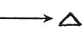

"In my Father's house are many mansions: if it were not so, I would have told you. I go to prepare a place for you."
(St. John 14:2).
Jesus spoke of the "many mansions" or planets of the Father's Creation. Some say that the
Bible never speaks of more worlds than the Earth, but it certainly does, for in Hebrews we read: "God, who at sundry
times and in divers manners spake in time past unto the fathers by the prophets, Hath in these last days spoken unto
us by his Son, whom he hath appointed heir of all things, by whom also he made the worlds." (Hebrews 1:1-2).
"Through faith we understand that the worlds were framed by the word of God, so that things which are seen
were not made of things which do appear." (Hebrew 11:3).
Since "worlds" is used in the plural sense, we can readily see that the Infinite Father created and established all
planets and celestial bodies by His Word. He used the Four Great Primary Forces, for "things which are seen' are "not
made of things which do appear".
The Harvesters, are the occupants of the Flying Saucers and spacecraft coming to Earth at this time. Space
visitors have always been with us! Since Miocene times, inhabitants of outer space have been surveying our Earth; they
have watched its progression over thousands and even millions of years. At times, they have contacted various
individuals who were dedicated souls, willing to serve God and fellow man. The reason they made themselves known
generally over the world in 1947, is because this is the time for the Great Harvest.
The Four Gospels speak of this period:
"Then saith he unto his disciples, The harvest truly is plenteous, but the laborers are few; Pray ye therefore the
Lord of the harvest, that he will send forth laborers into his harvest." (St. Matthew 9:37-38).
"But when the fruit is brought forth (ripe), immediately he putteth in the sickle, because the harvest is come." (St.
Mark 4:29).
"Therefore said he unto them, The harvest truly is great, but the laborers are few: pray ye therefore the Lord of the
harvest, that he would send forth laborers into his harvest." (St. Luke 10:2).
"Say not ye, There are yet four months, and then cometh harvest? behold, I say unto you, Lift up your eyes, and look
on the fields; for they are White already to harvest." (St. John 4:35).
If space visitors have indeed been with us always, we expect to find mention of them in ancient records. The
study of these ancient manuscripts and documents will show anyone that "Flying Wheels", "Fire-Circles", and "Flying
Boats", have been around for a long, long time. It doesn't matter what they are called, they are always described in
the same way; even as they are today. Saucers were not first seen in the 1800's, and this period
didn't see the first large public demonstration in history. What actually took place toward the close of the
Nineteenth Century was the first public demonstration of the modern, industrial age.
Mass appearances of Saucers in the past have been rare, but they have taken place. For example, the great Khmer race
of the Middle Ages completely disappeared from the face of the Earth almost overnight! The Khmers had developed a
great Hindu and Buddhistic civilization and were a native race of Cambodia in Indo-China, but they were of undetermined
origin. Information from present space visitors indicates that great space ships removed the entire
race of Khmers from Indo-China leaving their great capitol of Angkor Vat deserted and barren.
Portuguese diaries of the 1700's describe ancient, massive ruins in the interior of the Matto Grosso in Brazil. There
are indications on every hand that great numbers of people were suddenly removed from these vast, Grecian-like cities,
and transported elsewhere. Since they didn't just walk away (for their trail would be picked up) they must have gone
off in spacecraft like the Khmers. There are many other historical accounts that readily fall into this same
category.
Egyptian hieroglyphics have been translated by Borris de Rachewiltz which show the existence of Flying Saucers in
ancient Egyptian times during the XVIIIth. Dynasty. The transcription is a part of the Royal Annals of the period of
Thuthmosis (Thotmes) III, circa 1504-1450 B.C. The original manuscript is in very poor condition, however, part of the
translation is as follows:
"In the year 2, third month of winter, sixth hour of the day, the scribes of the House of Life found that a circle of
fire was coming in the sky. They thought it had no head, and the breath of the mouth had a foul odor. Its body was one
'rod' long and one 'rod' large. It had no voice. Their hearts became confused through it and they laid themselves on
their bellies.
"Now after some days had passed over, Lo! those things were more numerous than anything. They were shining in the sky
more than the sun to the limits of the four supports of heaven. Powerful was the position of the fire circles.
The army of the king looked on and His Majesty was in the midst of it."
In the Fourth Dynasty, the dynasty of Cheops, who reigned as its second king about 2750 B. C., Solar Boats
reached their peak of magnificence. The solar boat was constructed to carry the dead Pharaoh on his journey to
"heaven". These boats were at least equal to tombs in importance in ancient Egyptian religion, if not more important.
They were the one ritual object that remained constant, although other things changed and disappeared. Models of solar
boats were found in the tomb of Tutankhamen, the boy king. The solar boats didn't vanish from the Egyptian scene until
the invasion by Alexander the Great in 332 B.C.
Was the solar boat the Egyptian representation of the space visitor's vehicle? The ancients said that the immortals
went in solar boats of the night for the terrifying nocturnal trip through the Under-world. The boats had to pass
twelve gates. The "fire circles" became incorporated into the Egyptian religion as solar boats just as we have already
seen that Osiris and Apollo were in reality space visitors.
Early European and American cave drawings possibly depict space craft by the concentric circle drawings that exist by
the thousands. These are thought to be only Sun symbols; but why the concentric circles that appear as "wheels within
wheels"? These, of course, are far older than the Tetramorph symbol.
Wherever there is recorded history there is mention of spacecraft. And if we knew the unwritten record of prehistory
we would undoubtedly find more evidence of space visitation.
These visitors or Harvesters from other worlds are very much like we are; some may be thousands of years ahead of us
in progression, but they are still not perfect. In The Saucers Speak! they said: "We have marriage mates from
birth." This indicates that they must be united with their soul mates in marriage and the male and female must come
into physical life at about the same time so they can grow up together.
They claim they are not all vegetarians; some do eat meat. The question of eating is an individual matter as it is on
Earth. They say that human sex-life is misunderstood on Earth. The main purpose of mating is not to have biological
offspring alone, but to put the negative (female) and positive (male) elements back into balance. Man, by himself, is
not complete--he must have his other half in order to be a total creative unit and be in balance. They tell us that
many of the things we call sins are not sins at all in the Universal sense. They are sins on Earth because social
custom dictates it so.
One of the most startling phenomena connected with the coming of the Saucers, is the appearance from time to time of
the "fireballs". In The Saucers Speak! space friends said: "You would be astonished if you knew what these
'fireballs' really were. They are not the same as your remote-controlled devices." Another time they said: "It was a
ball-globe being on its duty." And again: "Crystals are valuable to us. With a crystal miracles can be
performed."
Since December of 1948 countless "fireballs" have bathed the hills of the American Southwest with their strange,
blue-green glare. They have also been seen in Pennsylvania, Maryland, Puerto Rico, Arizona, California, Washington,
Denmark, and other places throughout the world. The chief Air Intelligence officer for the Albuquerque district saw
one. Col. Joseph D. Caldara, USAF, attached to the Joint Chiefs of Staff, saw one in Virginia. Hundreds of pilots,
weather observers and atomic scientists have observed these "fireballs".
Reports came so rapidly during 1948 that in 1949 the Air Force established "Project Twinkle" to investigate them.
This Project established a triple photo-theodolite post at Vaughn, New Mexico to obtain scientific data on the
"fireballs". Day and night, week in, week out, for three months, a crew kept watch of the skies. Ironically, while
"fireballs" continued flashing everywhere else in the South-west, they saw nothing until the Project was
transferred to the Holloman Air Force Base at Alamogordo, New Mexico.
During the next three months they saw a few but were unable to make satisfactory computations because of the "fireballs'"
great speed. Search parties have had no better luck. They have combed in vain the countryside beneath the point of
disappearance; not a trace of telltale substance has been found on the ground!
Theoreticians in the Air Force believe the "fireballs" are not natural phenomena but propelled objects. They bear
similarity to the balls of fire, called "fireball fighters" or "foo fighters" which flew wing on Allied aircraft over Germany and Japan during 1944-45 and which have
never been satisfactorily explained. Many of these "fireballs" are balls of kelly-green fire, blazing
brightly, and race across the sky straight as bullets, parallel to the ground. Then they explode in a frightful
paroxysm of light--without making a sound!
In the Southwest, the popular belief has been that a strange meteor shower is underway. However, Dr. Lincoln La Paz,
mathematician, astronomer and director of the Institute of Meteoritics at the University of New Mexico, has pointed
out that normal fireballs do not appear green, they fall in the trajectory forced on them by gravity, are generally
noisy as a freight train and leave meteorites where they hit. The green "fireball" does none of these things!
The "fireballs" do not appear to be electro-static phenomena because they move too regularly and too fast. They are
not the product of a U. S. weapons project and they are not self-destroying Russian reconnaissance devices. These
"fireballs" are propelled, artificial objects. Their color is close to 5,200 angstroms on a spectrum chart--close to
the green of burning copper. Copper is almost never found in meteorites; the friction of the air oxidizes it shortly after the meteor enters the upper
atmosphere. However, a curious fact has been recorded by aerologists. Concentrations of copper particles are now
present in the air of Arizona and New Mexico, particularly in "fireball" areas. These were not encountered in air
samples made before 1948!
These "fireballs" are always silent, and upon exploding, light-up the ground directly beneath them. They are not
always green or blue-green in color; they can be nearly white, also. Of course, they are intelligently controlled
devices, but they are not manned with "little men" only inches tall. They are similar to our own remote-controlled
devices, however, on a much more highly advanced scale. They are sent down from the large space-laboratories that are
daily checking our Earth for important scientific data. Undoubtedly, Lt. Gorman encountered such a device when he
chased the "flying light" over Fargo, North Dakota, October 1, 1948.
It appears that the "fireballs" fall into three general classes: 1. Those which leave copper particles in the
atmosphere after silently exploding and leave no residue on the ground such as meteors do. 2. Those that were called
"foo fighters" and known by other names which draw near our aircraft and other earthly objects to obtain information
to be relayed directly to the space-lab. These objects are mainly crystalline in structure and are really
sentient beings. They possess the powers of sense or sense-perception and have actual experience of sensation
and feeling as they "televise" their gathered data back to the hovering laboratory. This idea is difficult for the
people of Earth to accept, and indeed, even to understand. The idea of a crystal that thinks! 3. There is a
third class of "fireballs" that do not explode. In fact, after they are constructed in great scientific laboratories
their power is immutable! There are very strange records in history of the activities of this type of "fireball".
Their power is similar to the power of the robot "Gort" in "The Day The Earth Stood Still" a science-fiction
movie. However, the space people do not have robots in the form of "mechanical-men".
In his book, The Ether Ship Mystery And Its Solution, Meade Layne says: "The balls or discs of light,
sometimes only a few inches in diameter, consist of 99% aluminum, with 1% of copper in very ionized form. These are
used as a rule as photo plates, that televise their pictures back to the mother ship that gave them birth, and are
later destroyed or disintegrated. The large green 'fireballs' are ionized copper, and are exploded in your atmosphere
to absorb the radiations created by your atomic bombs. These radiations drift toward the north magnetic pole, and most
of the green 'fireballs' originate in the northern skies."
Similar information has been received by other research groups. Type 1 is exploded to nullify adverse conditions
arising from atomic explosions. These "fireballs" are usually observed shortly after atomic tests have taken place.
Type 2 is a remote-controlled device that televises information back to the space-lab. Their nature should not be too
astounding to us. J. R. Anderson of the Bell Telephone Laboratories now claims that barium titanate crystals
apparently can store as many as two-thousand five-hundred items of information within a crystal of one square inch
surface and a few thousandths of an inch thickness. The crystal stores electronic impulses for a long time. The pulses
may be less than one-millionth second long. The crystal consumes no power while storing the information, and is able
to operate on low-voltage circuits. We know that tiny crystals serve as transistors, and can do many of the jobs that
vacuum tubes once did. Other crystals experimented with are rochelle salts, potassium niobate, and potassium
dihydrogen phosphate.
Scientists say that some of man's most difficult problems may be solved by crystals. Therefore, if we are now about
to have crystal recording devices on Earth, it is easy to understand how our space friends have such advanced
methods.
In his book, Flying Saucers From Outer Space, Maj. Keyhoe comes to the conclusion that the "fireballs" may
be guided missiles of an invading interplanetary force! At the same time, however, he tells us that this may not be
the case that the "fireballs" may have another purpose entirely. In other words, the Major is speculating, and lets
you draw your own conclusions. Many people, however, have definitely come to believe that our world is about to be
invaded by monstrous creatures from the blackness of space.
First of all, if the Saucers have been looking us over for centuries, why have they waited until we developed atomic
weapons to attack us? Why didn't they invade when the job was relatively simple and all they had to deal with was
clubs, bows and arrows? Maj. Keyhoe tells us that the first "fireballs" seen may have been testing devices or "duds",
and that later we can expect the actual guided missile attack! If that were true, why have they waited so long to
get at the invasion?
There is absolutely nothing to fear from the "fireballs", whether they be white, green, or blue-green; silent or
otherwise. Space friends are here with only love in their hearts--if they conquer us it will be with that love. If it
were not for their "fireballs" our own childish playing with atomic energy would bounce back on us. Through the use of
the photographic type "fireball" they have surveyed every square mile of our planet. They constantly patrol the major
fault lines of Earth to discover where overwhelming catastrophe may begin. In such an event, they might evacuate
certain persons. After the "fireball" relays vital information on the condition of the faults it explodes to be used
no more. (See Plate II).
Welcome the "fireballs" as the instruments of a friendly race, and say a prayer in your heart for those who are here
only in love.
The Type 3 "fireball" is little known and practically nothing has been gathered on its operation. Remember the
strange case of "spontaneous human combustion", in St. Petersburg, Florida in 1951? Mrs. Mary H. Reeser, 67, was
discovered in her apartment where she was almost completely destroyed by fire. Yet, the apartment itself wasn't
damaged and newspapers near the chair in which she was cremated weren't even scorched! Scientists said it would take
unbelievable temperatures to destroy her body so completely, and the fact that nothing else was damaged in the room
didn't make sense at all. One authority said that some kind of "lightning unknown to man at the present time" had to
cause the disaster.
Mrs. Reeser was by no means the first to suffer such a fate. The writer Dickens wrote a story about a man who in real
life actually perished as Mrs. Reeser did. These mysterious cremations display a definite pattern and a basic
similarity. In The Scientific Classbook or, A Familiar Introduction to the Principles of Physical Science,
printed in 1836 in Philadelphia, Walter R. Johnson, M.A., cites the then well-known cremation mystery involving the
Countess Cornelia Zangari of Cesena. Although parts of her body remained intact, she was almost reduced to a heap of
ashes. The air of her apartment was reported to be filled with a fine soot which had an unpleasant smell. The blaze
was confined entirely to the countess' body; the floor and furniture were undamaged.
Dr. Wilmer, a Coventry, England surgeon reported the cremation of Mary Clues, 50, in March, 1773. She was reduced to
whitish ashes, but the bed-clothes were undamaged. The walls and furnishings of the room were blackened and the air
was filled with a sickening smell. Only the body was burned.
An 18th Century German journal records the flaming death of Don G. Maria Bertholi, a friar who lived at Mount
Volere.
About 1845, Chambers' Edinburgh Journal, reported that Anne Nelis, wife of a Dublin merchant was cremated in
her chair. The back and seat of the chair were undamaged and the room was filled with a pungent unpleasant smell.
Also about 1845, in Limerick, a Mrs. Peacock was discovered on the floor of the room under her own and her body was
burning and "red as copper". In the ceiling of the room a large hole the size of the body had been burned through the
boards. Her body had dropped through this hole from her room above. Her room wasn't damaged in any way.
One morning in 1808 an Irish woman named Mrs. Stout, 60, was found burned to a cinder on the floor of her bedroom.
When the body was moved it crumbled into ashes, but her nightcap had not been burned!
Another Irish woman of 60, from the county of Doun, was found burning "with an internal fire". Her body was black as
charcoal and smoke issued from every part of it. There was a foul-smelling odor throughout the house and the woman's
daughter who had been sleeping next to her in the same bed had not been burned; in fact, the bed and bed-clothes were
untouched.
In recent years the mysterious and recurring phenomenon has happened more frequently. Mrs. Cecil Rogers of
Pleasantville, Ohio died this way, as did a man who tried to take his own life with a knife before the cremation took
place. Everyone of the victims so far has always been a degraded human being and water cannot put out the fire; it
only adds to its intensity.
The Type 3 "fireball" has a special mission in that it is magnetically attracted to certain individuals. As soon as a
person takes up a certain evil path, one of the "fireballs" starts on its journey toward that person. You ask: "Do the
space people destroy us with these monstrous 'fireballs' they construct in their laboratories? The answer is that the
space people destroy nothing! The victims destroy themselves by their own deeds and actions; they are free at
any time to change their ways and the "fireball" will reverse direction.
A wonderful example is found in A Dweller On Two Planets by Phylos. Mainin called upon Incal (Creator) to
punish him for his crimes and evil deeds if He (Incal) really existed. Then a voice said to him: "I shall not, O
Mainin, enumerate thy crimes, thou knowest them every one: I knew thy way; I knew its evil, yet interfered not, for
thou art thine own master, even as all men are self-masters; few, alas, are faithful! But thine altitude of wisdom,
prostituted to selfishness, to sin, to crime, more utterly than any other man hath dared, is thy destruction. Thy name
meaneth 'Light', and great hath thy brilliancy been; but thou hast been as a light adrift on the seas, a lure to death
of all them that follow thee, and these have been myriad. Thou hast blasphemed God, and jeered in thy soul, saying,
'Punish!' But thine is one out of a myriad of cases, more heinous because thou art wise, not ignorant. I will
cut thee off for a season, for thou shalt neither destroy more of my sheep, nor be let to leave unexpiated the evil
thou hast done. It were better for thee couldst thou cease to exist. But this may not be of an ego. I can but suspend
thee as a human entity and cast thee into the outer darkness to serve as one of the powers of nature. Get thee behind
me!"
Phylos goes on: "Now, however, as the Son of Light ceased to speak, Mainin uttered a howl of mingled terror and
defiance. Instantly Mainin was surrounded with a glowing flame which, on disappearing, revealed also the
disappearance of the Demon Priest. Thus had Mainin sinned, perverting his noble wisdom to evil and to sowing the seeds
of sin, on and in the hearts of unsuspecting weaklings of humanity. For this sowing he was blasted from the Book of
Life." The voice said: "Such is the fate of the wholly selfish man."
Another example is found in Mystic Magazine for October, 1954. In Orfeo Angelucci's article, My
Awakening On Another Planet, he says:
"The scene was focusing upon an unfamiliar part of the heavens. A sun and a number of encircling planets were in
view. Then the scene centered upon a single planet in this unknown solar system. It was a smug, sleek planet; but it
was exceedingly dark in tone and surrounded with concentric waves of darkness. A tangible vibration or emanation came
from it, evil, unpleasant and utterly without inspiration or hope. Approaching this world I saw a glowing red dot with
a long, misty tail. The fiery dot seemed irresistibly attracted to the dark world. The two collided in a
spectacular fiery display. I felt Lyra's hand upon mine as she whispered, It is an immutable Law of the
Cosmos that too great a preponderance of evil inevitably brings about self-destruction.'"
Therefore, victims of the mysterious cremation cases are destroyed by the great "preponderance of evil" existing
within their own souls! This Type 3 "fireball" that is "irresistibly attracted" to such persons is never destroyed; it
will exist forever once it is created. Not even its creators can revoke its power! When it finally connects with the
object of its magnetic attraction, it does not "explode" in the usual sense. Now that we are going deeper into new
areas of Cosmos we are encountering strange things; things which manifested centuries ago, but which are now
increasing at a rapid rate.
The question arises: "Why is the Type 2 "fireball" copper and crystalline in construction?" First of all, copper has
the strange capacity to record and retain. Copper can be compared to the soul in that it is receptive and also it can
recall once accepted impact. It can be said that copper never forgets; it does not lose impressions. Copper is a
stratified attention crystallized consciousness. It could be developed and actually experimentally ascertained that
copper radiation has a dimensional multiplicity which no other metal has. Gold or any other metal cannot step out of
the three dimensional world in its effects. Copper can be the bridge between time and timelessness. That is its occult
feature!
An electron shows itself as a particle in an electrical or magnetic field. But if a crystal diffracts it, it becomes
a wave; thus the wavicular form is generated by specific conditioning of diffraction by crystal. Transpose this
situation from the world of physics to the world of consciousness. Imagine consciousness to be equivalent to a
particle and three dimensional stimulation equivalent to a crystal. Consciousness itself assumes a wavicular form when
influenced, or diffracted, by the "crystal" of three dimensional stimulation.
The Type 2 "fireball' is undoubtedly composed of crystalline copper instead of being copper and crystal separately
used. The crystalline copper "fireball" actually lives and has conscious thought. Space
intelligences have said that with crystals "miracles can be performed", and that "crystals can think". This is true
because of the qualities of consciousness that copper possesses.
Now it is easy to understand what space friends meant when they said we would be "astonished" if we knew what the
"fireballs" really were. They said that "fireballs" were not the same as our remote-controlled devices; they are
ball-globe beings performing their duties. These "fireballs" of the Type 2 class can be instructed to go to a
certain location by telepathy or by verbal command. Once in the designated area they will record required information
through the unusual properties of copper and this information is evaluated and separated by the qualities of crystal
before wavicular form relays it to the hovering laboratory. Just as a crystal separates light into a spectrum, so the
Type 2 "fireball" separates the items it records. Remember, this type of "fireball" has intelligence within
it, not just behind it. The "flying light" observed by Lt. Gorman operated intelligently because of
its own inherent abilities, not because it was "guided" entirely by direction from a nearby mother ship or laboratory.
"Light hath more properties than even man hath dreamt of: it hath vibration so fine in ether that incandescence
cometh, it reacheth men's eyes in aspect of waves; I say it doeth more, it hath more than incandescence, it performeth
a greater wonder than that men may see in darkness: it cometh to man sustaining his spirit, it maketh miracles to
happen." (G. S. 30:15-16).
When we use the term Light in the broader sense, it includes not only incandescent light but also light of
shorter and longer wavelengths which cannot be
picked up by the human eye. Examples would be Infrared, Radio or Hertzian waves; Ultraviolet, X-Rays, Gamma Rays, and
Secondary Cosmic Rays.
"Light is the word of the Father, saying, Be . . . lo, matter, is!" (G. S. 30:21).
Since Light is Matter either one can be received and transmitted by the Type 2 "fireball". And further,
since Light is the essence of all life and Light is a wave phenomenon, the diffraction of Light by the crystalline
copper gives this "fireball" the qualities of conscious thought. Therefore, there must be a combination of
copper, crystal, and Light properties in order to have a sentient "fireball". (See Plate XVIII, p. 302).
In reading the Chart on A Conception of Matter, read horizontally from left to right. The column on the extreme right
indicates a return to the Particle Phase. Although the return is to the same phase, it is necessarily an advanced or
progressed development of that phase. This is a continuous, spiraling process. The vertical columns show analogy. All
analogy is basically a revealment of some measure of identity. The items in the vertical columns may be more closely
related than is suspected at this time.
"In Light have I manifested: in Light do I manifest: I give Light commandments: I have made it Motive Servant." (G.
S. 30.40).
"Light waves are Thought Incarnate manifesting on and in substance; I have answered the mystery. Thus Light hath
performance." (G. S. 30:42).
The Elder Brother or Christ says He "manifests in Light", and He gives "Light commandments". Therefore, Light
entering the crystalline copper "fireball" imparts "commandments" to the device, and it is truly an instrument of the
Father's Will through Christ and thereby through the space intelligences themselves.
Christ is One with the Father--and the Father is Thought Incarnate, therefore "Light waves are Thought
Incarnate manifesting on and in substance". Remember Christ said: "I am the Light of the world!"
In recent years, Lapis Lingua (Na4-5Al3Si3O12S),
has been used to stimulate subjects in telepathic experiments. In the Edgar Cayce readings
on gems and stones, Lapis
Lingua, a corrosive product of copper in its natural state, was often mentioned as a type of stone which may stimulate
the endocrine centers. They revert to the vibratory theory that all matter has its own vibration. Lapis Lingua, it
seems, may stimulate, raise the vibratory rate of the gland centers, if taped over them. This would be similar to
giving more electrical power to a sending and receiving radio station.
A CONCEPTION OF MATTER:
TYPE OF FIELD: |
PHASES OF MATTER: * |
|
Particle Phase is Timeless (positive) and At Rest: ** |
Means of Activation of Particle Phase: |
Wave Phase which is Temporal and In Motion: ** |
Particle Phase again manifests when Wave becomes of stationary character. |
Electro-Magnetic |
Electron
|
Crystal
|
Wave
|
Standing wave rendered in terms of vibrations is picked out as a photon (energy
quantum of light). |

|
 |
|
Multi-dimensional |
Self-complete state of consciousness *** Super-consciousness (knowledge). |
"Crystal" of three-dimensional experience. |
Wave phase of consciousness. Attention consciousness. (sense data or art of knowing). |
Return to Particle Phase. |
Conscious commands, emanations or vibrations to be recorded. |
Crystalline copper "Fireball." **** |
Wave motion relays itemized information. |
Return to Particle Phase. |
God the Father |
Desire |
Thought |
Souls *****
|
Soul (self-awareness) |
Frame of reference |
Spirit (soul in action) |
Godhood with creative thought) ***** |
The following are excerpts from the readings: "Lapis is of particular value to those who are interested in things
psychic. Outside influences may be induced to aid an individual in contacts with the higher sources of activity. Lapis
is not considered a high quality gem; rather a very low form, but for that indicated in the character of the stone
itself, it would be most helpful in creating that vibration which will make for the developments of certain characters
of demonstrations with any psychic forces or psychic individuals."
There is a definite increase in telepathic powers when the Lapis stone is used. In experiments, it has been taped
over four gland centers of the sender: Pituitary, Pineal, Thyroids, and Thymus.
Again the Cayce readings say: "It has been given that the Lapis
Lingua is the name which was applied to touchstones,
or those used by initiates in their various ceremonial activities. (Hence the stones acquired power through thought
projections about them.) Those that are of a psychic turn may hear the emanations as retained or thrown off by
influence about such stones; the Lapis Lingua would bring much that will act as a protective influence. This is the
green stone, you see, the crystallization of copper and those influences that are creative within
themselves. For, as indicated from the influence of the Lapis Lingua, there is the need for not only the copper
ore, that is a part of man's own development in many fields, but the need for the very combination of its elements as
protection to not only the material benefits but the bodily forces necessary for the transmission of benefits through
its own physical being. Wearing of the Lapis Lingua will make the body more sensitive to the higher vibrations. The
wearing of the Lapis stone would be an aid in the entity's periods of meditation, and would become a helpful
influence. Not as a 'lucky' charm, but rather as a helpful influence toward making for the ability to make decisions
in dealing with mental attributes; the emanations from Lapis Lingua are very strong. As to stone, have near yourself,
worn preferably upon the body, about the neck, the Lapis; this preferably encased in crystal."
The Cayce readings advised the use of both Lapis Lingua and Lapis
Lazuli. The latter was a favorite stone of the
ancient Egyptians. Lapis is probably the sapphire of the old testament and of the ancient writers. Both Pliny and the
Holy Bible make allusions to sapphires as stones sprinkled with gold.
"The stones of it are the place of sapphires: and it hath dust of gold." (Job 28:6).
In certain drawings, ancient personages are shown with a slender band around their head in the center of which
appears a gem or stone of some kind. It is believed that this stone was the Lapis Lingua, and that it is used not
merely for ornamentation but to stimulate the pineal gland near the center of the forehead.
All of the foregoing reference to the Lapis Lingua
only shows more clearly the unusual qualities of copper and why it is used in crystalline form in the construction of
the "fireballs".
Copper is the only metal which occurs native abundantly in large masses and copper is supreme among the common metals
in its everlasting qualities. The following are two slightly different forms in which the ancient alchemists of the
Middle Ages employed the "ankh", the symbol of enduring life,

to designate copper. These alchemists always represented copper by the astrological sign for Venus. this circle with
cross attached below was the Egyptian symbol for everlasting or enduring life.
The "ankh" or Crux Ansata symbolized life itself, therefore it was a fitting symbol to be used for copper which can
be the bridge between time and timelessness! Both the cross and the circle were phallic symbols, for the ancient world
venerated the generative powers of Nature as being expressive of the creative attributes of the Deity. The Crux
Ansata, by combining the masculine Tau with the feminine oval, exemplified the principles of generation. The
generative powers which the "ankh" symbolized were also representative of life, since without these powers no man
would be born on Earth.
In Asia, copper was the metal of the Queen of Heaven (Astarte, etc.). As stated before, astrologers and alchemists
assigned it to Venus; it was sacred to the Fire God and the Seven Gods of Babylonia and Assyria; North Pacific Coast
Indians and several other groups assigned it to the Sun; in India it was a sacred metal; the Indians of the Lake
Superior region regarded the lumps of copper they found as divinities.
In some places there is a custom of placing copper on a corpse. This is because copper was symbolic of life. Pliny
mentions that in Arcadia the yew tree is fatal to anyone sleeping under it unless a copper nail is driven into the
tree. Again we see the unusual power of this metal. As late as the middle of the eighteenth century the Spaniards
believed that copper grew in the ground, and that if a mine was left alone, it would become productive again! All of
this goes to illustrate the fact that the ancients knew about the hidden qualities of copper. The Spaniards suspected
the everlasting and timeless qualities of the metal when they thought it "grew in the ground".
In the Bible in Exodus 38:8, and in II Kings 25:13, the Hebrew word Nechosheth, should be translated copper
and not brass. Many sacred objects were fashioned of copper. In Ezra 8:27 we read: "Two vessels of fine
copper, precious (desirable) as gold." Copper was known as yellow, or shining brass, and the ancients knew its great
occult features because they said it was as "precious as gold".
Certain investigations have shown that life or death rays are emitted from metal discs. Ziegler, one of the
investigators of metal rays found during his experiments that copper discs emit life-rays. Zinc
plates emit hindrance or life-antagonistic rays. Platinum, as well as copper plates send out life or vitalizing rays
according to the investigations of Korschelt, and the former can be used to heal ulcers, etc.
Copper radiates green, and this color is neutral, at the fulcrum of the solar spectrum, the balancing point. The
space intelligences have said: "Blue of sky, gold of sun!" And green is poised between the Gold of Wisdom and the Blue
of Heaven on the spectrum.
The crystal ball among the ancients had a three-fold meaning: (1) It signified the crystalline Universal Egg
in whose transparent depths creation exists; (2) It was a proper figure of Deity previous to Its immersion in matter;
(3) It signified the aetheric sphere of the world in whose translucent essences is impressed and preserved the perfect
image of all terrestrial activity.
In recent years the crystal ball has been misunderstood and misused. Nostradamus possessed one of the few remaining
crystal balls originally brought here by space visitors and left in temples in ancient Egypt. Several of these balls
were unearthed near the Great Pyramid but they were done away with because they were thought to be of modern date and
worthless! The great predictions of Nostradamus came
about through his use of a crystal ball from outer space!
Prof. Reichenbach found that crystals radiate yellow light rays at the base while the top of the crystals radiate
blue light rays. The blue or green light rays are life or vital rays, while the yellow light rays are hindrance rays.
Dr. Heermann's research has proved that plants as well as trees radiate so-called life rays at the top while the roots
emit the hindrance rays. If it were possible to determine the colors of the rays emanating from the branches of a tree
we should most likely find that they radiate green and blue while the roots radiate yellow similar to the radiation of
crystals.
The human being is very similar since we radiate yellow on one side, blue on the other side. Therefore, we radiate
positive as well as negative magnetic currents. Rays from our Solar System produce life or vitality currents in our
body and these rays are of an electromagnetic nature.
Plants, animals, minerals and man--they are all similar. It is easy to understand why crystal qualities are
incorporated into the Type 2 "fireball". This device also radiates positive as well as negative magnetic currents and
operates in its own Resonating Electro-Magnetic Field. Rays from our Solar System, and, of course, other systems,
produce life or vitality currents in the crystalline "fireball" also; and again, these rays are of an electromagnetic
nature.
Newton discovered the definite relationship between tones and colors. Every tone and every color has a distinct
frequency of vibration, and because of this relationship, the "fireball" receives and transmits everything in full
color and full tonal quality, exactly as a living being would react to vibrational stimuli.
The quotation from The Ether Ship Mystery And Its Solution, by Meade Layne was given to show that he accepts
the Type 1 and Type 2 "fireball". His statement that the latter consists of 99% aluminum seems contradictory to the
information in this book. However, aluminum radiates green the same as copper. We must keep in mind also that the
space visitors are coming from many areas of the Universe and from many levels of progression. Actually, there may be
other "fireballs" of varying construction in use.
All spacecraft, including Saucers, operate in a Resonating Electro-Magnetic Field. This RMF is the Fourth Great
Primary Force that Earth scientists do not understand. Certain scientists of the past came dangerously close to
discovering it. It is dangerous because it is at the same time of a positive and negative nature. If its great force
is reversed it becomes a deadly death ray.
This terrible sidereal Force was called Mash-Mak by the ancient Atlanteans. The Aryan Rishis speak of it in their
Ashtar Vidya and this same Force is called vril by Sir E. Bulwer-Lytton, in his Coming Race. It is
believed that this author coined this name from the word virile. The antediluvians called it the "Water of
Phtha;" their descendants named it the Anima Mundi, the soul of the Universe. Later the mediaeval hermetists termed it
"sidereal light", or the "Milk of the Celestial Virgin", the "Magnes", and many other names.
The name vril may be a fiction, but the Force itself exists. It is mentioned in all the ancient secret works
of Earth. In the Ashtar Vidya, we discover that this vibratory Force was aimed at an army from an Agni Rath
fixed on a flying vessel and it reduced to ashes one-hundred thousand men and elephants. It is allegorised in the Vishnu
Purana, in the Ramayana and other works. In the fable about the sage Kapila we discover that his
glance made a mountain of ashes of King Sagara's sixty-thousand sons. This Force is often referred to as the
Kapilaksha--"Kapila's Eye".
Many years ago Faraday, the great scientist, said:
"The various forms under which the forces of matter are made manifest, have one common origin. They are so
directly related and naturally dependent, that they are convertible, as it were, into one another, and possess
equivalents of power in their action."
The Vril, the Primal Force of Faraday, and the Kabalistic Astral Light are one and the same thing. In
ancient times the Vril Stick was a slender "glass" rod, some thirty inches long and hollow in the center. At the top
end there was a strange handle, or rather it was capped by a six-inch length of "glass" affixed in oblique slant
somewhat in the shape of a cross-bar made by Spencerian penmen when they write a capital letter "T". Inside of this
tube the Vril Ray was confined, and in this case it was a death ray. How it was evolved, or how it could be confined
in a slender tube pertains to the lost arts of antiquity.
The Vril Stick was used in Atlantis and later in Egypt. A recovered stick now rests in the British Museum in a
specially sealed glass case. No one handles it anymore and no one is allowed even to view it! The ancient gods and
goddesses are sometimes depicted holding Vril Sticks, and great rulers had them in their possession. This was the
origin of the king's sceptre. The sceptre signifies the union of the forces that create life, and thus from the most
ancient days, a symbol of highest power given only to rulers and gods of life. The Vril Stick was indeed a "sceptre
endowed with marvelous power". And any potentate possessing it carried the decree of life or death in his hand. The
"ankh" closely resembles this stick as to form and to symbolic meaning. There are countless legends of fairy wands,
and magical rods that have been derived from stories about the Vril Stick.
This stick of amazing power was constructed of "glass". Remember, the ancients prized diamonds and other gems because
they were pure forms of carbon. They used carbon and magnets together to perform certain beneficial cures on the human
body, and the gods are sometimes shown holding rods of carbon in their hands about six inches long. Today gems are
prized for their monetary worth or for their value in giving one social prestige; but the ancients prized them for
their vibrational qualities. That is why so much gold was used and worn by the Aztecs, Mayas, Incas, etc. Gold and
diamonds both raise the vibrations of a human being. Other stones and metals can lower the vibrations.
All of the foregoing is important when considering the fact that the Saucers operate in a Resonating Electro-Magnetic
Field and are said to be "Crystal Bells!". Many reports state that the Saucers appeared to be made of crystal and were
translucent; they must utilize the same power once known on Earth and found in the Vril Stick. This stick held some
sort of resonating magnetic current operating fatally in reverse. The ancients were familiar with such principles of
magnetism because several ancient civilizations on Earth possessed "flying ships" not very much different from our
present day Saucers. A few years ago, a Saucer landed in Alaska that was mainly composed of glass. Later, a model was
made of that Saucer and used in the movie, The Day The Earth Stood Still. Scientists claim glass would
withstand high speeds better than any known metal. Of course, Saucers don't have to worry about the effects of "high
speeds".
The Vril Ray force known as the Fourth Great Force relates to the other Three Great Forces, and all belong to the One
Primal Force of the Omniverse. This One Force is symbolized by the swastika, for the wheel is the emblem of
creative motion--manifesting force is rotary, being, in fact, the "Wheel of the spirit of life" involving the whole
system of the Universe.
Many people, including the "prophets of gloom", throughout the world are saying we will be totally destroyed in a
terrible atomic war. In meditating upon these grim forecasts for our immediate future we can't help but remember other
dire warnings that have come our way over the decades. Some "prophet" or other is always setting an exact date for the
"end of the world". The planet Earth is now in a state of transition toward a greater enfoldment of man's progression;
the world is not going to end!
Space friends are here to help build a bigger and better Earth where all men may live together as true brothers
should. Everyone will be "his brother's keeper". The Great Avatar never said: 'Till the end of the world", as so many
theologians would have us believe. Actually, He said: "Till the end of the age." Immediately we see that He
was referring to the end of the Piscean Age, not the cataclysmic so-called "end" of the literal ground beneath our
feet. Further, Christ never spoke in negative terms for His was a ministry of positive thought in contrast with the
"thou shalt nots" of the old Mosaic Law.
Space craft occupants have said that man on Earth worships the Creator; but he worships in word, not deed.
If we believe in Him, and have faith in Him, we cannot believe that He will rain down death, destruction, and horror
on us. Over and over again, with much repetition, the "men of God" in the pulpits today tell us that our God is "all
loving and kind". With the next breath they contradict themselves by telling us that at times He "gives us up". And
they paint a picture of "sweet angels" casting poor "sinners" into lakes of fire and brimstone to endure
eternal torment!
Information coming from the highest authority among the space people tell us that our world is to become a place of
tranquil peace and plenty for all. Only the good and the beautiful is to be inherited by man on Earth! Many
individuals to-day point to the strange changes in our weather, the many earthquakes, tornados, tidal-waves, floods,
and so forth and tell us that these are certainly "signs of doom". Changes have been going on for thousands of years
on Earth, but the old world is still keeping its orbit around its Sun. However, many great changes never before
experienced are taking place and will continue to do so. These changes are on the physical, mental and spiritual
planes of Earth.
In 1953 there were many outstanding catastrophic events. On February 2nd hurricane floods on south-eastern British,
Dutch, and Belgian coasts killed one-thousand nine-hundred forty-one persons. On February 12th there was a violent
quake at Torroud, Iran which killed five-hundred thirty-one persons. March 19th saw the Turkish quakes that killed
two-hundred forty-six people. On April 30th tornados killed nineteen in central Georgia and caused wide-spread damage.
In May, on the 11th, Waco and San Angelo, Texas were smashed by tornados causing sixty million dollars in damage and
killing one-hundred twenty-four persons.
June 9th tornados killed one-hundred thirty-nine in Michigan and Ohio. The following day, on the 10th, tornados
killed eighty-six in Massachusetts. On June 26th Japan's worst flood in modern history killed seven-hundred two with
one-thousand four-hundred thirty-three missing. July 12th seven-hundred died in the Greek Ionian Island earthquakes.
Later in the year on November 9th two-thousand died in the Indochina typhoon. And on December 5th many people died in
a tornado disaster that caused twenty-five million dollars in damage at Vicksburg, Mississippi.
There were many, many more reports of disasters of all kinds. Scientists agree that something mighty strange is going
on. These changes are to be expected as our entire Solar System moves into a new area of the Universe! Meteorologists
are concerned over the unusual weather conditions, but statements are never made to the public. The facts of 1953
speak for themselves; the evidence is more than substantial.
Climatologists, meteorologists, and physicists, are not the only ones worried about strange weather phenomena; plain
citizens are alarmed and can observe that the climate of the world is getting warmer at an unprecedented rate. The
question is seriously asked: "Do the atomic explosions produce mysterious changes in the atmosphere at high
altitudes--perhaps in the ionized layers of the atmosphere?"
Atomic explosions are not the cause of the weather changes, but they are weakening an already unstable condition. The
vibrations of the new area of the Universe are responsible for the physical, mental, and spiritual changes on Earth.
Men's minds and conceptions are changing as well as the geographical features and climate of the world. Our government
picked an area of small population to test its atomic devices, but it also tested these devices over major fault lines
in New Mexico and Nevada. This further weakened these fault lines and accentuated the change already under way because
of different vibratory rate.
Astronomers know that gigantic sun spots appear on our Sun after atomic explosions. If the Sun can be affected
ninety-three millions of millions of miles away, it certainly stands to reason that vast changes will take place on
the originating planet also. Even though the world isn't going to end, nevertheless, there will be great catastrophes
locally throughout the world in years to come. In The Saucers Speak! the statement was made that disasters
would increase--and increase they have!
Here are some of the mysterious climatological facts: The world's heat belt is on the move. It is progressing
northward as well as eastward. William J. Baxter, in his book, Today's Revolution In Weather, says animals
are already reacting to the northward advance of the heat belt. The possum is now common as far north as Boston, where
fifty years ago, he was seldom seen north of the Mason-Dixon line. Deer, badgers, moose, and raccoons are pushing in
the direction of the North Pole. The cardinal, the mocking bird, the tufted titmouse and the hooded warbler, always
considered southern birds, are moving into New England. Birds that once flew South every winter are now staying in the
North all year round.
The southern parts of the United States will be like the tropics, and New York and New England will be the Florida of
the future. Abnormally high temperatures have been recorded along the entire East Coast and in most of the Central and
Southern States. Overall snowfall has been much less than average. The same phenomenon has been noted up and down the
West Coast, with abnormally high temperatures combined with scanty precipitations of snow recorded.
A tribe of Indians in Maine has observed that the ice in the Penobscot River has been breaking up much earlier since
1948. The break-up has been occurring frequently following an "unseasonal and abnormal" January thaw--something
previously unheard of. In earlier years, the river was seldom free of ice until late March or early April.
On the West and East Coasts and across the Southern States, semi-tropical vegetation is appearing. Throughout the
entire crop season, fruits and vegetables that require considerable warmth have been attaining larger size more
rapidly. Pines and spruces are growing nearer and nearer the North Pole. Cereal crops are flourishing in places where
twenty years ago there were ice fields!
Dr. George H. T. Kimble, director of the American Geographical Society, says it is altogether possible that Canadians
in Northern Ontario will grow corn and New Yorkers will become cotton planters. He points out that temperatures have
been rising in winter in the last thirty to forty years. In Upper Canada, he relates, the forest is migrating into
hitherto barren tundra.
Arnold Court of the University of California says we can expect temperatures over one-hundred seven degrees in the
summers of the future. Scientists probing glaciers throughout the world, including the great Baffin Island glacier,
have discovered these glaciers are steadily shrinking.
Dr. John W. Aldrich, of the U. S. Fish and Wildlife Service, says that fish are moving northward. Cod, once unknown
in Greenland, is now a steady Eskimo dish. Whiting, halibut, king mackerel and haddock are found farther and farther
north in the Atlantic. New Jersey has sighted tropical flying fish! The tropical-fish hunting grounds of the future
will be along the New Jersey and Maryland coasts instead of Florida and the Bahamas, as at present. For some years
now, deep sea pleasure fisherman have been taking tuna off the Long Island Coast and even further to the North. It was
not so long ago that tuna were seldom observed further North than Georgia waters.
The tremendous warming-up is also observable north of the United States--Canada, Alaska, and Greenland. The size and
extent of glaciers in all these areas have been decreasing at an unprecedented rate, exposing vast areas for potential
cultivation. In Alaska, Muir Glacier has been shrinking in length at a rate of about half a mile a year, while Guyot
Glacier has been losing thickness at about thirty feet a year. Alaskan farmers are now growing crops in areas that
only a few years ago were snow-covered. Along the Alaskan Arctic Coast, much of the ground is bare of snow through
many months each summer, while temperate-zone trees and shrubs are appearing further to the North and higher on the
mountainsides. Alaskan forests are "advancing", according to authority Dr. Robert E. Griggs. Along the entire roof of
the North American continent, the Arctic Ice is receding rapidly. It used to contact the coast solidly and be many
feet thick in winter. Now there are often open patches of water extending fifty or more miles offshore, while the
thickness of the ice has greatly decreased.
Ships are now frequently able to put in at Greenland ports in mid-winter. Fresh land is steadily being bared by the
receding icecaps, and vegetation and birds that formerly shunned Greenland are appearing. The great strait between
Greenland and Canada that used to be ice-locked the year around is now frequently open to ships. In the United States
the climate will be like that of present day Mexico. Canada's climate will resemble that of the United States today.
Greenland's climate will resemble that of Canada now. However, if the trend does not slow down, the entire equatorial
belt will become unfit for human habitation--the temperate zones will become largely scorching deserts, while only the
polar regions will be comfortably habitable.
In the United States, "dust bowl" areas are increasing. In Africa, the Sahara Desert is advancing Southward at a rate
of three miles a year. The Middle East is steadily declining in water supply, while much of India and China, once
fertile agricultural land, is now semi-desert or actual desert without vegetation of any sort. In Central Africa, the
lakes are becoming smaller and the jungles less lush. This is also true of South America, where the Amazon River Basin
and jungle areas are shrinking rapidly, with grasslands developing around the periphery. Lake Victoria in Africa is
dropping at the rate of almost a foot a year while the amount of water flowing over Victoria Falls has declined
greatly.
Great Salt Lake in America has shrunk by half in less than fifty years, and the waterpower production of Niagara is
declining. In one-hundred years the temperature of England has risen by three degrees. Similar rises have been noted
in other countries where accurate weather records have been kept. It has been estimated that a rise in average
temperature of only six degrees would melt all the glaciers and polar icecaps in the world in a few decades. The
sea-level of all the oceans is rising at a rapid rate.
Oceanographers calculate that if all the ice now existent on Earth was melted and returned to the oceans, the
sea-level would rise by approximately five-hundred to one-thousand feet, reducing the total land area of the Earth by
many millions of square miles. England and most of Central Europe will be submerged, as would the entire Mississippi
River Basin!
There are many good reasons why we cannot attribute the rising temperatures to atomic causes. For one thing, the
temperature rise has been going on for many years, and was first noticed long before we even suspected an atomic bomb
could be made. It has been increasing at an accelerating pace, however, which is why an apparent connection with
atomic bombs has been suggested.
It is well-known that the entire history of the Earth has been marked by a succession of "cold" and "warm"
periods--some of thousands of years duration, others of only a few centuries. Meteorologists say, therefore, that it
is not unusual because the Earth is experiencing a climate change, but it is unusual because instead of going into a
colder cycle which it should be doing, it's going into a still warmer cycle!
Astronomers know that our entire Solar System is moving rapidly into an area of greater warmth--the Sun and its
family of twelve planets is moving into a region of space where cosmic ray bombardment and intense vibrational
frequency will cause many drastic changes. Proof of the fact of a climate warm-up the world over are the many European
avalanches during the past few years, and absence of
the ice floes that usually prevented ships from entering Northern European harbors. The government is well-aware of
the mysterious change and has secret projects at the North Pole investigating all evidence.
These changes are to be expected as our Earth enters the new section of Creation. Several Saucer researchers received
information several years ago that our Earth was being bombarded with cosmic rays that would change man as well as the
terrain! Recently, Prof. Kurt Sitte of Syracuse University said: "Too many electrons are showering down on us. At
least, there are too many of these tiny units of electrical charge to be explained by present theories, which hold
that electrons are produced by cosmic rays smashing into the atmosphere high above the Earth. Unknown
particles or processes must be involved!" Dr. Sitte's conclusions were based on studies made in the Summer of 1953 at
altitudes of ten-thousand to fourteen-thousand feet
in Colorado. Dr. Sitte is now a visiting professor at the University of Sao Paulo in Brazil. He has been investigating
at Chacaltaya, Brazil, eighteen-thousand feet above sea level. He hopes to discover what processes or particles
produce the electrons that cannot be accounted for by present theories!
Science is now discovering and proving what space intelligences said months ago. There is intensive bombardment going
on, and the changes are taking place daily! Space friends also said: "Look to nature for signs of the New Age
presently to come to Earth." When we "look to nature", we see proof on every hand.
From space craft occupants we understand that the new influential vibrations, now being felt, are coming from outside
our own Solar System. Many times, science later confirms with actual discovery the statements made by the
extraterrestrial visitors. Dr. Marcel Schein of the University of Chicago says that part, if not all, of the cosmic
radiation continuously bombarding the Earth comes from outside of the Solar System.
Dr. Schein's conclusion is based on the extremely high energy of the onrushing particles as they have been caught in
photographic emulsions sent many miles above the Earth's surface. "It would be most unlikely," Dr. Schein says, "that
the Sun's magnetic field could accelerate the charged particles to such very high energies, greater than ten-trillion
electron volts. The theory of extra-solar origin is also supported by some new experiments at the University of
Chicago. By using two photographic plates sliding slowly past each other, cosmic radiation scientists are, for the
first time, able to pin down the time at which the particle left its track.
With this new method, Dr. Schein and his associates have found that the variation between the numbers of tracks of
heavy charged particles during the day and at night is not very great. "This," he said, "argues for a cosmic ray
source outside our own Solar System."
Dr. Armin J. Deutsch of Mount Wilson and Palomar Observatories believes that the cosmic rays coming to Earth may be
material thrown off from rotating stars with strong magnetic fields. Dr. Deutsch's findings tend to prove that many of
these rays are extra-solar in origin.
Dr. Schein believes that maybe all of the cosmic radiation bombarding the Earth comes from outside of our Solar
System. However, it appears that nearly all cosmic rays come from our own Sun--the only rays coming from outside of
our System are possibly those consisting of high energy particles. The fact that too many electrons are showering down
on us and present theories won't account for them and the fact that certain cosmic rays bombard the Earth from outside
our own Solar System tends to support the idea that our entire Solar System is entering a new possibility area of the
Universe. Every phase of Earth life will be greatly influenced--Economics, Religion, Education, Politics, Science,
Social life, Medicine, Eating habits, etc. Virtually everything will change, and for the better!
If we are truly entering a New Age, then we should certainly see effects of it on the physical plane. No one can deny
the fact that "strange" things are going on. Look at your newspaper, your magazines; turn on your radio or television
set; go outside and observe the weather and you might even listen to the unusual movement of the "creeping" things.
The lowly worm knows more about what's happening than the crowning achievement on Earth--Man!
Prof. Albert Einstein's new unified field theory entered the picture at just the right moment. In brief, it tells us
that gravity, electricity, and magnetism are all one and the same thing. As the Nineteenth Century drew to a close,
scientists felt that they had built a perfect picture of the Universe on the basis of Sir Isaac Newton's law of gravitation. This was a
mechanistic universe, set in a framework of absolute space and absolute time, in which the law of
cause and effect operated without exception.
Our scientific view is widening at an alarming rate. If you carefully scan your newspaper you will notice a great
deal of talk going on about magnetics; electronic experiments; new sources of power, such as the harnessing of sun's
rays; and so on, ad infinitum. Steam as a source of power is fast being replaced. All the great discoveries
of the Water Age are being supplanted by new Air Age discoveries. In that older age, Columbus crossed the Atlantic and
our livelihood centered on things of the watery seas. Now man has his eyes and his heart on the stars out in space!
The happenings of today remind us of the time when Jesus was in a small boat on turbulent
waters. Those with Him were very much afraid and awakened Him to tell Him of the disaster that surely would befall
them. Do you remember His words to them? He said, "O ye of little faith!" That very same thing is taking place today.
Men of "little faith" are preaching "doomsday". Violence is around us, indeed, just as the turbulent waters were
around the little boat. But, remember, He calmed the waters. No matter what takes place on Earth, He will guide us,
for He has promised, "Lo I am with you always!"
Religionists of today preach eternal life, but they certainly don't act as if they believed it. If life is eternal
what is there to fear? Take the great events of our time as signs of the approaching Golden Dawn on Earth, with your
very soul say: "Thy will be done, in and through me, thy servant."
At the present time, a rather new theory as to the origin of the Flying Saucers is gaining wide acceptance. This
theory explains the spacecraft away as "the spirits of demons, monsters and devils". Certain hell-fire and brimstone
evangelists tell their listeners the country over that Satan himself is the leader of the Saucer armada!
We should not be surprised at this kind of thinking, for it is characteristic of the planet Earth. So-called "men of
God" interpret everything in the Holy Book according to what they personally believe--they are presenting "the
doctrines of men to be the commandments of God".
Very few ministers are telling their congregations that the Saucers may have a connection with the "signs in the
skies" that the prophets of old spoke of. Some theologians, however, believe that the coming of the Saucers heralds
the coming of the Elder Brother himself. Remember, Jesus was called a "devil" so why
shouldn't we expect His Host also to be referred to in the same manner?
There are powerful forces in this country and throughout the world today who want the people to believe that the
authority behind the Saucers is of the Evil One! Through ignorance and superstition they hope to control this
situation as they have in the past. Dr. Vannevar Bush, president of Carnegie Institute in Washington, recently said
that discoveries in the atomic field are only a small segment of the advances being made in other fields of scientific
research. He declared that "the dam is about to break" in the whole field of biological science. The trend is not so
evident as it now is in the atomic field, but he described it as a "great blossoming". He said there is the
possibility that the emotional reactions of a whole nation might be controlled through a chemical placed in the food
they consume! They could be made docile or irrational, lazy and unimaginative or energetic and constructive.
Already, world food products are contaminated by chemical poisonings in the guise of "preservatives", "enriching
ingredients", "bleaching", and "synthetic vitamins". Now the prospect looms that in the near future the very emotions
of people are to be controlled by substances placed in their daily rations. Shortly, biological science will
experience the "shaking up" given physics a few years ago when the Atomic Age suddenly came upon man. But many of the
so-called "advances" are of a destructive and negative nature as are the ideas that atomic power can be used for
peaceful pursuits.
The people of the world can be deceived by those who put "darkness for light". The real advances will be the
total elimination of food-tampering, food contamination, and chemical fertilization. True advance will not be the
complete control of world population by having power over every thought, action and deed of man through his food
consumption. Man will not only be released from dogmas, doctrines, false theories, pseudo-authorities, war mongers,
spiritual conceit, and other centuries-old "chains that bind", but he will take his true place in Cosmos as a Son of
God and a potential god himself!
In The Saucers Speak! mention was made of a Wyoming evangelist who claims he has had contact with Saucers
for many years. He says they land near him, give off horrible stenches of burning sulphur, and the occupants are hideous, beastly
devils with swishing forked tails and large horns. He says he could write a book that would put all Saucer research
done so far "in the shade". He names this theory for world salvation after himself, of course. This man is not
preaching love, brotherhood of man, and the imminent return of the Elder Brother. Instead, he warns people to beware
of the "devils" and "imps" in the Saucers!
"Doomsday is here; disaster is upon us; we shall all surely die", cry those of "little faith". The Holy Book and the
Golden Scripts are full of the Elder Brother's promises. He will "make our foreheads like flint", "nothing at all
shall hurt us", "He is with us till the end". The evidence is abundant on every hand that the children of God have
nothing to fear. Nowhere does Jesus speak of death and destruction as man's heritage in
the New Age!
"For God hath not given us the spirit of fear; but of power, and of love, and of a sound mind." (II Timothy 1:7).
One of the unusual types of sightings connected with occupants of Saucers is the "mask sightings". In the early part
of 1954, several young people were passing March Field, California in an automobile. Glancing onto the Air Force
Field, they observed a shiny-looking Saucer resting on the ground. They stopped their car and got out in order to get
a better look. After observing the craft at closer range, they noticed it was quite smooth and apparently no one was
around. Still curious, they decided to get an even closer look. As they neared the object, a man suddenly stepped in
front of them. He raised his arm and threw a "fireball" at them. It passed by them and struck their car. They
immediately turned and fled, driving into the nearest Sheriff's office in a hurry.
The young observers said that the man wore some sort of a half mask on his face that appeared to be metallic in
nature. This incident is very similar to the Italian sightings of 1953, where a man saw two occupants of a Saucer with
metallic half-masks on their faces.
The "fireball" had dented the side of their car and the painted surface was burned and black. Needless to say, no
harm was intended as far as the young people are concerned. The only reason the Saucer pilot threw this object is
because he wanted to keep the curious observers from getting too near the Resonating Electro-Magnetic Force Field
around the Saucer. What better way could he have gotten them to leave? And he didn't have to say a word! The "ball of
fire" that came at the Florida Scoutmaster served the same purpose. If Saucer intelligences really wanted to harm
someone they could do a much better job of it!
A reputable production engineer in South Pasadena, California says that while he was working cutting wood in his
yard, a Saucer hovered nearby about twenty feet from the ground. By means of a ladder, three men descended and
although they didn't speak English, he says he exchanged some ideas by means of sign language. He says the three men
didn't even have mouths! These men might have been wearing masks, or they might be from worlds where only
telepathy is used and where food intake is not necessary or the same as our own. At any rate, they could not speak.
"Earths In The Universe," by Emanuel Swedenborg, was first published in Latin in London, 1758. In the
section on the planet Mars, he says: "There was presented before me an inhabitant of that earth (Mars). His face was
like that of the inhabitants of our earth, but the lower region of the face was black, not from a beard, for
he had none, but from blackness in place of it. This blackness extended on both sides as far as the ears. The upper
part of the face was like the face of the inhabitants of our earth."
Swedenborg may have observed half-masks that appeared black. At any rate, there have been enough reports on
"masks" to make it a vital part of Saucer investigation.
Space intelligences many times said: "We cannot stand by and see another waste of Creation." Because of this they
survey our planet checking on dangerous fault zones and other weakened and unbalanced conditions.
Before the Ionian Island earthquake disaster, great exploding flashes of light were observed in various
parts of Europe. The night before the big New
England hurricane of 1954 there was a terrific explosion in Melrose, Massachusetts--cause unknown.
Enormous exploding lights have been observed in the sky all over the world just before disaster strikes on
the ground.
A mysterious explosion rocked the port of Dieppe, France. The explosion was preceded by a flash in the sky. A
railwayman at Orchies, near the Belgian border, said he saw a fiery disc in the sky moving at great speed at the time
of the Dieppe explosion. Similar happenings have been observed along the Western Coast of the United States from San
Diego to Seattle. San Diego and Los Angeles have both experienced strange exploding lights overhead, usually followed
by a mysterious explosion.
The Coast Guard pressed its investigation of wide-spread reports along the Oregon coast of a brilliant flash of light
observed offshore by many people. Reports of the phenomenon came from points as widely separated as Empire and
Newport, as well as several communities in between. Persons reporting the flash to the Coast Guard and the Portland
air defense filter center said they saw a bright, multi-colored burst of light which suddenly disappeared as though
some flaming object had dropped into the sea. They agreed that a vapor trail had lingered over the water for several
minutes after the lights disappeared. In addition the reports came from Coos Bay, Beverly Beach and Depoe Bay. The
Coast Guard at Newport and at Thirteenth Naval District Headquarters in Seattle said no planes had been flying over
the area and discounted the possibility the light had been a meteor because of the object's trajectory. Officer's
declined to speculate about what might have caused the strange flash.
Seattle, Washington experienced a mysterious exploding light that startled hundreds of people. This city is in a very
vital area because it is situated over the place where three of the world's major fault lines converge. The same
situation that exists for the Ionian Islands and the Azores, exists for Seattle! These same exploding lights have been
observed in the Japanese Islands and in other parts of the world where fault lines exist.
Sometimes these "lights" explode silently and at other times, because of certain conditions, they cause a violent
shock-blast. They are only relaying vital information back to the space laboratories hovering high above. On September
9, 1954, a violent earthquake shattered the old Roman town of Orleansville, Algeria. Surrounding villages were also
hard hit and buildings crumbled killing twelve-hundred fear-stricken inhabitants. Witnesses reported that a great ball
of fire appeared in the sky just before the shock crumbled the city of nearly fifty-thousand population.
Space intelligences have been closely watching the Mediterranean area. There have been more violent earthquakes in
that area in the last two years than in the rest of the world combined. Italy has had severe shocks and Mr. Vesuvius
has been on the rampage. This volcano is situated on Italy's great fault line. Greece has suffered terribly from
earthquakes recently and hundreds died in Turkey only recently. Cyprus has also been hit by severe earth tremors. Two
major fault lines join west of the Cape Verde Islands and shocks have been recorded in that area of the Atlantic.
Other reports have come in from the Caucasus Mountain area and from several places in Iran. There have been many
earthquakes in the Mediterranean area and there will be vast geographical changes there. The great "shaking-up" of the
entire African, Grecian and Italian countrysides is a prelude to this.
If the "great ball of fire" observed over Orleansville had relayed information that a major catastrophe was due
because of weakened fault lines, the Saucers would undoubtedly have staged an evacuation operation. Space
intelligences say they will assist in the event of major disaster. How much longer the Mediterranean area can stand
stress and strain on the fault zones is not known, but the Saucers are keeping a sharp lookout. (See Plate II).
On May 31, 1954, the Combat Operations Center at McChord Air Force Base, Washington, received eight reports of
unidentified objects sighted over various sections of the Pacific Northwest. The objects were reported over Spokane,
Pasco, Ellensburg, Yakima and several Oregon cities, including Redmond and Portland.
Fred Blackstone, a commercial pilot, reported at Moses Lake the object he sighted was absolutely silent and had a
stream of reddish fire spouting from its end. The control tower at Yakima County Airport described the object it saw
in a similar fashion, as did Justin Cerley of Spokane, an Air Force veteran of the Korean War who sighted another
object just east of Spokane. He said the object glowed like a light bulb. Sgt. George Berg, of the Spokane Police
Department, said he and his wife saw a globe of light with brilliant red sparks shooting from the back. It was not
going fast and made no sound. Other reports said that people had observed "bluish blinking lights", "flying white
globes of light", "white balls making terrific speed", "silent spheres of light", etc. The Air Force Combat Center at
McChord said there was no attempt at interception and declined to speculate on the nature of the objects.
On June 1, 1954, The State Patrol in the Ellensburg area reported "flying globes" and several calls were received at
Radio Station KLXE. Reports were now coming in from all over Washington, Oregon, parts of Canada, and even from
Alaska. Willard Renfro, of Ellensburg, along with his wife and mother, observed a circular object with a "dome-shaped"
top. He observed it for forty-five minutes through binoculars. Many observers said they saw "flat objects" flying in a
northerly direction on a line parallel to the ground.
On June 5, 1954, six mysterious flying objects were sighted over Port Townsend. The Air Force dispatched an F-86
all-weather jet interceptor plane, fully armed, to Port Townsend from Paine Air Force Base. The interceptor made no
contact with the strange objects, however, and a negative report on the flight was filed. Jefferson County Sheriff
Peter J. Naughton said he saw six yellowish objects "flying in echelon formation spaced about two-hundred feet apart".
He estimated they were at an altitude of four-thousand to five-thousand feet and traveling at two-hundred fifty to
three-hundred miles per hour. Naughton said he reported the objects to Indian Island, a Naval Base near Port Townsend.
He said he watched the Saucers zoom through the skies for about twelve minutes before he went to the telephone. A
short time later he received a telephone call from Seattle requesting him to go to the Port Townsend Airport and
ground planes because "interceptors were coming in with live ammunition".
The Flying Saucers returned on June 8, 1954 to amaze Seattle citizens. They appeared over many sections of the city
about seven in the evening. Dozens of residents called the Post-Intelligencer and the Police Department to
report the objects. Fire-men stationed at the Fire Station at E. 45th St. and Brooklyn Ave. spotted about six of the
shiny discs and promptly used binoculars to get a closer look. A Queen Anne resident, Mrs. Sylvia Knight, told police
she and a "lot of other people" saw Saucers moving "very high in the sky and shining like silver".
Sumner and Puyallup, Washington are three miles from each other and this area is eight miles southeast of Tacoma.
Tacoma is thirty miles south of Seattle, Washington. Sumner and Puyallup are located on the middle fault line of the
three major fault lines that converge at Seattle. Because of this fact, many strange and unbelievable things have been
going on in this area, and they are still happening.
David D. Bunker of Sumner, his brother Allen, his fiancee, his younger brother Steve, fellow workers from Boeing
Aircraft Co., other relatives and friends have observed orange, red and green blinking lights in this same general
area. Many of these lights are known to have come toward the State of Washington from the Pacific Ocean area.
Some people have seen fast moving orange-red lights or "white globes", and others, such as David Bunker, have
observed white or red lights that move slower and seem to be surveying in a particular area close to the ground. These
lights blink, stop, then seem to flare up brightly at times. The May-June Washington sightings were concerned with
actual Saucers, but some of the phenomena are connected with Type 2 "fireballs" and "projected intelligence" from
highly advanced solar systems.
On September 12, 1952, the following information was relayed to George Van Tassel at Giant Rock, California. "I am
Ashtar. Our Center has requested that I advance to you mortal beings of Shan (Earth) the following information. Over
your past several months our ventlas have discharged several thousand light beings in certain remote areas
upon your planet. These individuals, serving the cause of Universal Law, are recording numerous occurrences taking
place within the civilization of the people of Shan. It would be advisable to instruct any mortal being who by chance
should approach any of our light intelligences to do so with a thought projection of peace, 'I am friendly'.
Any approach in any other frame of thought will meet with instant defensive conditions. It is not our desire to injure
anyone. Only under individual protective measures shall we do anything other than retreat. In the records obtained by
these beings . . . we shall determine what action to take in the very near future. My love remains with you. I am
Ashtar."
This communication to Van Tassel shows the nature and purpose of the Washington "lights". Surveys are made constantly
in remote areas of the Pacific Northwest because of the unstable and dangerous condition of the fault lines there.
Many pilots from the Seattle-Tacoma Civilian Airport and pilots from McChord Air Force Base have reported strange UFO's. These objects have also appeared on
radar in this area. The Derringer Power Plant in Summer has had a great deal of difficulty with its power operation,
and employees from the plant have observed strange flying lights while they have been working there. Saucers usually
land in areas where interference with city electrical systems will be negligible. Because of their intensive study of
this fault zone area, power systems are affected.
In the Fall of 1953, David Bunker was awakened by the neighborhood dogs barking. Once awake, he saw that his entire
room was filled with a strange, brilliant orange glow . . . it covered everything. He called his sister Lois and his
brother Steve who also observed this phenomenon. David went downstairs and discovered that the whole house was filled
with the glow. When he went out onto the front porch he noticed that this orange glow engulfed his house only. A
neighbor looked out of his window and the light faded away. However, both David and the neighbor heard a humming sound
similar to a sixty-cycle hum.
On Sunday night, March 28, 1954, David, Steve, Lois, David's fiancee, and Lois' girl friend, were in David's car.
They drove to a lonely uninhabited area off the road by the Puget Sound power line. David turned out the car lights
and immediately saw a white glowing ball with a clearly defined edge about a mile and a half ahead of the car. It
glided down, wobbling as it went, and apparently went into a group of trees. Then this light came from the tree area,
traveled up through the valley, and approached the car. After several minutes, Steve said: "Who's that?" David and his
fiancee saw the white globe in front of the car and to the left. When David turned on the car lights the globe
disappeared. Later, Steve asked: "Did you see the man standing in front of the car?" Steve had seen a tall,
well-built, broad-shouldered man standing exactly in the spot where David and his fiancee saw the white globe. Steve
said the man had a glowing light all around him.
On Saturday, July 3, 1954, at Midnight, David and his fiancee were out driving when they saw a white light drop out
of the sky and go into some bushes next to the road. After the light entered the bushes it turned green and could be
observed twinkling through the brush. David turned out the car lights, and shortly thereafter they saw a solid red
ball of light come from the left and drop onto the ground about twenty feet in front of the car. David turned on the
lights and a man was standing where the red light had hit the ground. The man was standing directly in front of the
car and looked over his right shoulder. He was about six feet tall, wore a tight-fitting white shirt and some sort of
a vest. He appeared to be about twenty-seven years old. He looked through the car, not at it! When
David turned on the car motor, the man vanished. One moment he was there and the next moment he was gone. The green
light in the brush had remained there, twinkling, as the red ball of light came down.
On Monday, July 19, 1954, David was in his car and saw a white light moving in the sky. It came closer, got bigger,
then seemed to fade out of sight. About five miles further down the road David noticed a terrible odor that filled the
air around him. It was suffocating. It smelled like metal burning in acid and hydrogen sulfide.
All of the foregoing is related to show that there is an intensive survey now being conducted in the State of
Washington by the Confederation of Space Intelligences here in the name of the Infinite Father. And remember, Mount
Rainier is only a short distance from Sumner and Puyallup--Mount Rainier, where Kenneth Arnold saw the nine Saucers on
Tuesday, June 24, 1947.
There have been sightings near Lancaster, New York that are identical with the strange happenings in Washington. Mr.
and Mrs. Gerhard Koblich owned a fine farm near Lancaster, and several months ago unusual phenomena began to take
place. They both saw many "flying lights", "white globes", "flying red stars", etc. Then, one night, as they were
watching television in their living-room, a foggy-white beam of light shot through one of the windows. And looking in
the window was the face of a man who appeared to be of a dark complexion. He couldn't have been over four or four and
a half feet tall, because nothing could be observed but his neck and head. The face seemed to be in or with the beam.
When they walked toward the window to get a better look, the face disappeared. Later, it would appear again. This
happened many times, but they never saw footprints outside and no one was ever discovered on the farm although they
searched everywhere.
One time, Mrs. Koblich was outside in her yard feeding her cats when a beam came from above and caught her in its
three-foot wide path. There was nothing in the sky at the time--nothing but the beam of white light. This is another
case of "projection" and since this area is close to two major fault lines a survey is being conducted there,
also.
Warren, Ohio is also in the area of two major fault lines and many unexplained things have been going on there. Many
Saucers have been observed in the general area and have been reported by civilian and Air Force pilots. Saucers have
landed and their occupants observed by several individuals.
Many months ago, information was received that Martian scientists were planning to improve the condition of Earth's
soil by impregnating it with certain highly-concentrated, organic material. When this program would be put into
effect, and how, no one knew.
February, 1954, saw the actual beginning of the new project. On February 4th, Mayor Ray Logan of Galena, Illinois
said he was flooded with calls from persons who claimed they saw a long, brilliant red "telephone pole" fly over
Galena a few nights before. The Mayor said it was only a typical Saturday night in Galena, meaning that the revelry
wasn't so great that people were seeing things.
The report in this Northern Illinois town near the Wisconsin border coincided with observations of a brilliant blue
flash (also observed by Ray Palmer, of the Amherst Press, publishers of this book), believed caused by a meteor, over
central Wisconsin. Witnesses said the pole was shaped something like a baseball bat and glided noiselessly along, not
very high and not very fast.
Mayor Logan said that very reputable and responsible persons first called him about the object, and that afterward,
he received numerous reports from others in Galena and in communities to the north. "The descriptions given me were
pretty much the same," Logan said. "I'm still getting calls."
The police department said that a half dozen motorists reported that they nearly had accidents when they saw the pole
pass low overhead. Mouths agape, they jammed on brakes. One motorist said he almost piled into a big truck when the
driver abruptly stopped. Virginia Beadle, the local telephone operator, said she saw the object while on her way to
work and it nearly frightened her to death.
Later reports said the pole was green in color as it sailed northward, and Logan said he received re-ports from the
north that it was blue over Wisconsin. It was undetermined, however, whether Wisconsin residents saw the pole or the
blue flash of light reported by others. Dr. Bengt Stromgren, director of Yerkes Observatory at Williams Bay,
Wisconsin, said he received a dozen reports of the flash from throughout central Wisconsin, but from all of
information it appeared that the "flying phone pole" had merely been a fireball! But it may be very
significant that in both 1955 and 1956 Wisconsin led the nation in corn production per acre, although it is
not a part of the famed "corn belt".
The 'Red Spray Cases" mentioned by Maj Keyhoe are believed to be early experiments on the part of space intelligences
to determine the best method of soil rejuvenation on our world. These cases happened back in the 1940's--the things
came down to two-hundred feet and exploded. The green "fireballs" never came as close as these devices. The government
listed this strange phenomena in its 1949 summaries as Case #225.
One night, back in 1949, a strange reddish light was sighted at Albuquerque, New Mexico where they had been seeing
the green "fireballs." The object came in at about five-hundred feet, then it suddenly dropped down to two-hundred
feet and exploded in a red spray. A few people were frightened, but it wasn't directly over the city--it had exploded
out of town toward the airport. This same thing happened on three other nights--the same place, and the same hour!
Maj. Keyhoe believes the red spray devices were ranging bombs under remote control and is convinced that the green
"fireballs" are guided missiles. However, he says: "The tests began over four years ago; if an attack was all they had
in mind, they'd have hit us long before this." That is true--this phenomena is of a more constructive nature. The
nature and purpose of the green "fireballs" has already been given in this book, and the "Red Spray Bombs" were an
early form of the "Red Flying Poles"--and both serve the purpose of soil rejuvenation.
Because of the cosmic eruptions through which we are passing, the world's available humus supply is shrinking and
there will be serious difficulties in growing enough food to prevent large-scale famines. This fact was stated
recently by Prof. Vaino Auer of Finland's Helsinki University, one of the world's leading geographers. He also said
that these eruptions (of which there have been six since 12,000 B.C.) take place at two-thousand year intervals and
are marked by drastic changes in plant and animal life, long periods of drought, the rising of sea level, and the
receding of forests, supplanted by desert or shrub. At present we are experiencing all of these phenomena.
What is most alarming is the disappearance of bacteria, which is causing the recession of forests, death of plants,
and the erosion of humus. Prof. Auer has warned of the dangers of extensive agriculture, noting that it takes
nine-thousand years, more or less, for humus to be formed. It can be destroyed in a year or two!
Space friends knew the Earth would be bombarded more and more with cosmic rays, and they knew this would begin to
destroy humus-forming bacteria. Our government has now set up a Division of Radiation and Organisms to handle this
growing problem. Since information on humus destruction is "Top Secret" no news is given out to the press or the
public. The Division investigating the phenomena attributes the causes to "conventional" factors when questioned.
Evidently they don't agree with Prof. Auer. They say: "Bacteria will grow anywhere where there is a suitable
environment involving water, mineral nutrients, suitable organic matter and the proper temperature." This is true, but
they don't mention the fact that increased cosmic ray bombardment is destroying the bacteria!
The bacterial population of any region fluctuates greatly depending upon changes in the various factors listed above.
And changes there are! The Division admits that in certain regions great changes are taking place, but they will not
admit that there is a worldwide trend in regard to a disappearing bacterial population. They say the changes can be
readily explained upon the basis of known physiological and agriculture phenomena. If this is true, why are scientists
like Dr. Sitte and Prof. Auer so concerned?
The Division further says that the principal factors causing the recession of forests are fire, the lumbering
industries and the demand for increased agricultural lands. They say that this is a serious problem, but primarily a
socio-economic one. There have been forest fires for thousands of years, and man has been extending his agricultural
areas for hundreds of years and the lumbering industry isn't a particular threat to forests now. Authorities don't
want information on increased cosmic ray activity to become generally known, so they "explain it away" as a
socio-economic problem!
The Space Confederation decided to do something about our depleted Earth and this is what they have said: "You have
been hearing about strange 'Flying Telephone Poles' that are observed to come very close to your Earth. These strike
the earth and will take care of a large area. They go into the ground and dissolve in the soil in about one hour. They
do not look like shooting stars when they fall, but appear as a blue streak to the naked eye. Your beneficial
bacteria are dying and these 'flying poles' are sent out by the scientific space laboratories to take care of you
Western Hemisphere. In this area of your planet you will find that certain farmers are puzzled as to how the soil
became so rich and at times there is evidence of a red dust. Many of these 'poles' are tube-like, pointed at both ends
and usually six feet long by twelve inches in diameter, although they can be much larger. The tubes contain rich,
concentrated organic soil material from our own gardens and canals on Mars. They are full of vital, healthy, organic
elements that will correct your increasing problem of humus destruction. The soil will be supplied with
nitrogen. Look on some of your land; it will take on a reddish color in the sunlight--remember, Mars is known as the
Red Planet!"
Certain bacteria produce enzymes which accelerate the decomposition of organic wastes such as proteins and certain
other nitrogenous compounds producing nitrogen compounds in a form that can be used by plants. Nitrogen is one of the
constituents of protein and thus a requirement of all plants and animals.
Certain bacteria take free nitrogen from the atmosphere and convert it by various methods to nitrogen compounds that
are in such form that plants and animals can use it. Atmospheric nitrogen, however, is not available to plant and
animal life--so without the services of bacteria in decomposition of organic wastes via the enzymes they produce, or
conversion of free atmospheric nitrogen to nitrogenous compounds available to plants, there can be no life
and the partially decomposed organic material known as humus that we already have is left to erosion for lack of plant
life to hold it in place!
The early "spray" devices did not prove effective, so the "pole" or "tube" devices were designed which would enter
the soil directly instead of just being sprayed over the surface. The many cases of "red snow" or "red dust" reported
in Europe and the United States are due to the rejuvenation experiments by space intelligences. "Red snow" spread dust
over the Minneapolis area so thickly that many tons were dropped upon each square mile of territory. A minimum of
seventy-five tons of red dust fell on the basic Twin City area of one-thousand five-hundred square miles. One sample
collected on the University of Minnesota campus showed the equivalent of 128.8 tons per square mile.
Several farmers have been interviewed who say that something is happening to the soil that they cannot explain. In
certain areas its richness has increased unbelievably.
So bacteria are now dying at a rapid rate because of cosmic eruptions. Because of this vital nitrogen compounds are
not produced and the nitrogen cycle essential to all life is violently disturbed. Space scientists are correcting that
condition on Earth by sending highly concentrated organic material impregnated with the necessary bacteria, and this
will replenish the depleted Earth supply. They say they are doing this in the Western Hemisphere because the land of
the New Age is in the West.
Remote control bombs? Guided missiles? A thousand times no! Friends from outer space are saving our food supply by
soil rejuvenation and thereby they save a race!
In The Saucers Speak! space visitors spoke of a "dark moon", or "second moon" of Earth. They called this
second satellite "Fowser". Now scientists claim they believe our planet may indeed have an extra moon, in fact, there
may be several moons that are unknown at present. The government has known about the existence of extra satellites for
some time but they are now breaking the news "gently" to the public. Many new discoveries are not being revealed as
yet. For instance, the speed record in aircraft is far in excess of what they claim--and what about experiments on
magnetic flight or the space station? Is an artificial earth satellite now being constructed at a base in California?
In July, 1954, .the planet Mars came closer to Earth than it had in fifteen years. It was forty-million miles away,
and scientists had another look.
During the early part of 1954, the "Mars Committee" representing leading observatories and universities met in
Washington. Although Venus is closer to Earth than Mars, the latter is more easily observed. Most astronomers agree
that there is something extraordinary on the surface of Mars. Dr. H. Percy Wilkins, fellow Royal Astronomical Society
and world authority on the Moon, recently announced that the Martian "canals" have been seen by astronomers this year
and that he, himself, saw the "canals" distinctly when he used the sixty-inch reflector at Mt. Wilson.
The "Mars Committee" may be used by the government to announce to the world that there really is life on Mars! Once
people get over the shock that they are not alone in the Universe perhaps they can take the bigger announcement of the
nature of the Saucers.
Astronomer Clyde Tombaugh, who discovered the planet Pluto in 1930, has been looking for nearer and more elusive
objects. Extra Earth satellites. Dr. Tombaugh has refused to give many details and refers questioners to Army Ordnance
in Washington. He says the fact that other Earth moons have not been discovered yet does not mean that they do not
exist. Remember From The Earth To The Moon, by Jules Verne? In this book a small satellite of the Earth
disturbed the course of the space ship and almost kept it from returning to Earth.
A small satellite close to the Earth would be hard to spot. It might circle near the equator, invisible to most of
the world's observatories. In any case, it would spend nearly half its time in the shadow of the Earth, where it would
be invisible. Most of the rest of the time it would be passing over the sunlit Earth, and would look no brighter at
best than a tiny fragment of the Moon as seen by day. The best time to look for a small satellite would be at dawn or
dusk, when it would be shining brightly above the dim-lit Earth.
A satellite near the Earth would have to move very fast to keep itself out of the clutches of Earth's gravitation,
and its speed would make it doubly hard to spot. Thousands of small areas in the sky must be examined and completion
of such a search could take years. Dr. Tombaugh is now trying to discover what space intelligences said was true many
long months ago!
Nothing "official" has been released announcing discovery of the "dark moon" of Earth, but other information equally,
if not more important has been reported. Nearly two years ago, Frank Edwards, radio commentator, first reported Mt.
Palo-mar's discovery of "two unknown objects of unique character". Sir Edward Appleton, famous British radio-physicist
said: "These two unknown objects are discoveries of great astronomical interest."
On March 12, 1954, Frank Edwards again revealed official concern over the two "objects" which lie in the orbit
between Earth and Mars. These objects recently confirmed by radio-telescope were not seen prior to 1877. Scientists at
White Sands, New Mexico are examining the evidence.
On August 22, 1952 our research group in Northern Arizona was informed by space friends that Lowell Observatory was
conducting highly secret investigation with the aid of new electronic devices. We knew that expensive equipment had
been installed on Mars Hill near Flagstaff, Arizona and the building housing the equipment was surrounded by a high
fence and was guarded by large dogs. The Santa Fe Railroad was informed that if its radio equipment in the vicinity
interfered with the electronic investigation some changes would have to be made. The two artificial satellites, or
space stations, were tracked by the new equipment at Lowell.
In August, 1954, Aviation Week magazine reported that the two objects were meteors, and insisted
that Dr. Lincoln La Paz helped identify them as natural rather than man-made. Dr. La Paz attacked the magazine's
reference to him, but acknowledged the search for nearby satellites. He also said: "The report is false in every
particular insofar as reference to me is concerned."
Two artificial objects are known to be circling the Earth at four-hundred and six-hundred miles out in
space. The Russians haven't beaten the United States to space operations and the objects aren't natural
meteors. Van Tassel and others reported their existence several years ago.
For years, astronomers have observed fantastic sights on our Moon. Dr. F. B. Harris on January 27, 1912 saw what he
reported as an "intensely black object" whose size he estimated at fifty by two-hundred fifty miles. Almost
two-hundred years ago Sir John Herschel reported a dozen or more very bright lights on the Moon during eclipses. He
thought they were active volcanoes, but he was very puzzled by some that appeared to be above the Moon.
A bright light in the Crater Aristarchus and one at the eastern base of the lunar Alps have been seen frequently for
more than one hundred years. The whole plain of Mare Crisium puts on a spectacle of dots and streaks of light once in
awhile. Messier blazes up with two bright lines separated by a very dark band dotted with luminous points. Exodus and
Aristarchus have displayed long lines of light "like luminous cable or shining wall" and moving lights have been
frequently seen.
Strings of moving lights have been observed in Plato and in 1869 thirty bright lights appeared on the crater floor
all at once. They rapidly sorted themselves into
groups--some would blaze simultaneously, at the same moment other groups faded to a dull glow. This continued in a
symphony of lights, as if they were all manipulated from a master keyboard. This was so sensational that the Royal
Society instituted a group observation. The display died out in April, 1871 and the group had recorded one-thousand
six-hundred observations and drew thirty-seven graphs of the light fluctuations.
Lights around the Moon's rim are often seen during eclipses, as are squadrons of bright and dark bodies maneuvering
in the lunar sky. During the eclipse of November 16, 1910, a bright light shone on the Moon and observatories at two
widely-separated points saw a ball of light shoot out from the disc. C. Stanley Ogilvy of Trinity College admits that
lights have been seen around the Moon. Recently, Mount Piton, in the northern section of Mare Imbrium has sent out
beacon-like beams of light--some mighty strange things are happening on Luna.
Van Tassel says the Crater Tycho is the location of one of the largest underground cities on the Moon. The population
of Tycho numbers several hundred thousand and the city is built on many levels or stories. The bright spot in the
Crater Aristarchus is the lens which provides power, light and other utilities for the oldest lunar underground
city.
Karl G. Jansky of Bell Telephone Laboratories, was the first man to detect radio signals originating from the Moon.
Whereas radio signals originating from the Earth would be detected as coming from above the Earth's surface, the Moon
signals have been detected as originating from beneath the surface of the Moon. This confirms the statement
of Van Tassel that inhabitants of the Moon live underground in craters.
Many thousands of years ago, the Moon had an indigenous population. Then there were long periods when our satellite
was nearly lifeless. Several hundred years ago, intelligences from outer space migrated to Luna and are the "little
people" mentioned in Behind The Flying Saucers, by Frank Scully. There was a suggestion in his book that the
"little men" might come from Venus, but their home base is the Moon. Also, the small occupants of the Saucer that
landed on Helgoland Island in the North Sea off the German coast originated from our satellite. These "little people"
are similar to the Martian in advancement, being twenty-five or thirty thousand years ahead of us at the present time.
The Harvesters have their own system of color identification. The code consists of various geometric shapes
and certain colors; the meaning of each follows:
FORM: |
COLOR: |
INTERPRETATION: |
Square |
White |
Spiritually perfect man. |
" |
Yellow |
Protect man. |
" |
Orange |
Serve man. |
" |
Red |
Strengthen man. |
" |
Violet |
Understand and teach man. |
" |
Blue |
You are of Man, Nature of Being. |
" |
Green |
Be at peace with man. |
" |
Brown |
Comfort man. |
" |
Gray |
Do not afflict man. |
" |
Black |
Do not destroy man. |
Circle |
White |
Spiritually perfect the body. |
" |
Yellow |
Protect the body. |
" |
Orange |
Serve the body. |
" |
Red |
Strengthen the body. |
" |
Violet |
Understand and teach the body. |
" |
Blue |
You are of Christ--The Being. |
" |
Green |
Be at peace with the body. |
" |
Brown |
Comfort the body. |
" |
Gray |
Do not afflict the body. |
" |
Black |
Do not destroy the body. |
Star (Five Points) |
White |
Spiritually perfect the mind. |
" |
Yellow |
Protect the mind. |
" |
Orange |
Serve the mind. |
" |
Red |
Strengthen the mind. |
" |
Violet |
Understand and teach the mind. |
" |
Blue |
You are of the Holy Ghost--Understanding of Being. |
" |
Green |
Be at peace with the mind. |
" |
Brown |
Comfort the mind. |
" |
Gray |
Do not afflict the mind. |
" |
Black |
Do not destroy the mind. |
Triangle |
White |
Spiritually perfect the soul. |
" |
Yellow |
Protect the soul. |
" |
Orange |
Serve the soul. |
" |
Red |
Strengthen the soul. |
" |
Violet |
Understand the soul. |
" |
Blue |
You are of God--Spirit of Being. |
" |
Green |
Be at peace with the soul. |
" |
Brown |
Comfort the soul. |
" |
Gray |
Do not afflict the soul. |
" |
Black |
Do not destroy the soul. |
The above information was received from a research group in a large city in the midwest. Color is used extensively by
space visitors for identification and communication purposes. The "lamps" mentioned by Ezekiel and by Herr Linke in
Germany are used so that when the occupants of a Saucer are separated from each other after leaving their craft, they
can immediately look at the color flashing from the other man's "lamp" on his chest and know at once what he is
thinking. This is telepathy helped along by mechanical ingenuity. Their mental vibrations or emanations show up as
various colors in the "lamp".
Two Soviet astronomers recently announced that the Earth has a fiery tail! Nature, official journal of the
British Association for the Advancement of Science points out that the scientists are thoroughly reliable and have had
exceptional opportunities for observation from the central Asian desert. The two astronomers, Fesenkov and Astapovich,
were making a study of the "Gegenschein," a glow seen occasionally in the sky just opposite the Sun two or three hours
before sunrise or after sunset. They concluded that this glow is a tenuous film of gas in the form of a hollow sleeve
pulled off from the extreme upper atmosphere on the twilight side of Earth--much the same phenomenon as the tail of a
comet.
They have now observed a broad pyramid of fainter luminescence connecting the "Gegenschein" with the horizon, and
confined to the western side of the night sky. Before, this luminosity was believed to be a concentration of gas
particles moving around the Sun like a minor planet. But now the Russians have discovered it is not beyond the
atmosphere but continuous with it. Thus it makes a tail extending outward into space for about one-hundred
sixty-thousand miles!
The "Gegenschein," or counterglow was first recorded in 1855 and seems to be associated in origin with the zodiacal
light. In the tropics this zodiacal light is visible throughout the year, both morning and evening, and in
especially clear skies it has been traced as a narrow zodiacal band completely around the ecliptic.
Van Tassel at Giant Rock received the following: "There are many things going on unknown and unseen by you. One of
these conditions is the condensation of a ring around Earth at the equator line. This ring has always been there
unknown to your men of science. It is similar to the visible rings of the planet Saturn. In our terms, this is known
as the "Arch of the Firmament".
Therefore, the Earth doesn't have a tail, but it has rings! From various locations on the surface
of Earth the ring or arch system would appear as a tail for only part of the equatorial arch could be viewed at any
one time. This is why the zodiacal light is visible throughout the year in the tropics.
Again, Van Tassel's communication says: "As this ring will soon be discovered by your science, they will then
comprehend more about light energy. This ring maintains balanced interchange of power through the crust and atmosphere
of Earth, and all planets that revolve. It is the prime cause of vortices turning clockwise in the northern hemisphere
and counter-clockwise in the southern hemisphere. You will discover that vines climb in spirals in the same direction
or rotation, opposite to each other in the different hemispheres. The condensation of the ring will bring about
stabilization of Earth and cause the end of your seasons. Scientists will register this as a natural occurrence but
let me inform you, that many thousands of beings trained in the control of vortice condensation are working diligently
on a long, hard assignment to bring this condition about. A thousand years from now, one may look at the Earth from
other planets and see rings similar to those surrounding Saturn."
Of course, this ring was discovered when Fesenkov and Astapovich observed a broad pyramid of fainter luminescence
connecting the "Gegenschein" with the horizon. It will become more visible to the unaided eye as time goes on.
Needless to say, the rings of Saturn are not "moonlets" or "swarms of meteors". The Resonating Electro-Magnetic Field
of Saturn is very intense. This is evidenced by the fact that Saturn has the greatest oblateness (flattened at the
poles) among the planets in our Solar System. Because of the considerable oblateness of the planet, the cleavage layer
of its magnetic field shows up as three concentric rings in the plane of its equator. The inner parts of the
rings revolve faster than the outer parts. This tends to prove the fact that Saturn is operating in a vortex.
The outer parts of the ring system move westward across the Saturnian sky; but a considerable part of the bright ring,
and all of the crape ring rise in the west and set in the east as seen from the surface of Saturn, duplicating the
behavior of Phobos in the Martian sky. The rings are designated by name and letter as follows: the outer rings (A),
the bright ring (B), and the "crape" ring (C). The rings A and C are transparent. Observers have watched the
rings pass over stars without entirely hiding them.
The ring system of Saturn is similar to the "rings" mentioned by George Adamski in Flying Saucers Have
Landed. "As the ship started moving, I (Adamski) noticed two rings under the flange and a third around the centre
disk. This inner ring and the outer one appeared to be revolving clockwise, while the ring between these two moved in
a counter clockwise motion."
Some people wonder if our government is attempting contact with Saucers. They have already had contact, but they are
still working at it as evidenced by the fact that at Edwards Air Base in California there is a highly secret operation
known as Project NQ-707. This project and its personnel is concerned with nothing but radio-telegraphic contact with
Saucers. They have been successful in their work and have attempted to get the Saucers to land at a rendezvous point
near Salton Sea in Southern California. Warner Peak, of volcanic origin, is very close to this area and because of a
deep crater would be excellent for Saucer landings. In fact, it is reliably reported that many such craft have used
this extinct crater in recent months. It was near Desert Center, California that contact was made with a Venusian on
November 20, 1952, and this area is also near the Salton Sea rendezvous point.
Many people are "fed-up" with the numerous space stories found in comic books, pocket books and pulp magazines--heard
over the radio, seen on television and in the movies. But this is all part of the plan on the part of the
Confederation. That's why science fiction has gained in popularity in the past few years. Why did the younger
generation suddenly drop "cowboys and injuns" and turn to "spacemen and Saucers"? The answer is obvious--The
Wanderers have infiltrated the writing profession!
Some sincere individuals say: "But those awful space programs are ruining our children!" On the contrary, "those
awful space programs" are indoctrinating the children for the biggest event in history. People object because the
space heroes invariably carry "ray pistols" or "disintegrating guns" and wear the familiar "inverted fishbowl" or
"space helmet".
The guns and the helmet are absolutely necessary, for without these symbols the TV spaceman would be as undressed as
"Hoppy" without his trusty pistol and his western boots. Another example is that all children today are crazy about
"space suits" which can be purchased quite reasonably or even improvised--which reminds me of a boy belonging to a
friend of mine . . . this potential "spaceman" stole the plastic cover off the toaster and calmly put it over his
head. He wasn't going to be outdone by the neighbor kids; not by a long shot!
One excellent space program on television in Los Angeles, California, starts its daily excitement by first showing a
Flying Saucer going through black, interstellar space pinpointed with a million stars--and a voice says: "Commander
Comet--the first man to come from another planet to prove to Earth-men that brotherhood is found throughout
the Universe!" Did you notice that the voice said MAN? Because of this program, children are being shown that ordinary
men occupy the Saucers, not jelly monsters or vegetable Frankensteins! Furthermore, they are shown that the guy in the
Saucer is their friend, he hasn't come to invade the Earth, but upon his arrival he organizes a bunch of kids into
"Space Scouts" and they assist him as he takes on the role of "Superman" and cleans up the Earth making it a fit place
for decent people to live in. Do you still say these programs are "awful"?
When the Saucers land by the thousands, the children will be knocking at the Saucer pilot's "door" saying: "Let me
in--I'm a Space Scout!" Children are very receptive to indoctrination by space visitors. Take the case of ten year old
Jamie who looked up at his grandmother and said, "Tell you what, Gram: You help me with my arithmetic and I'll explain
to you all about the sound barrier and space people."
In The Saucers Speak! Ponnar said: "There are now many young people in your world who understand our
message. They will accept it quickly for they are of the New Age. The Great Awakening is here."
Recently a serial story appeared in a leading magazine for boys and girls. It was called, Jonny And The Boy From
Space. John Jenks was the nine-year old son of a scientist who lived on a farm in the northern part of New
Jersey. Jonny had the amazing experience of talking with a man who came to Earth in a Flying Saucer space ship. The
man from space Jonny called "the man from Out There" and this man had left a space-o-tron with Jonny. Possession of
this scientific toy enabled the boy to communicate with the space man by means of thought waves. The spaceman finally
brought his young son to Earth to be Jonny's playmate for awhile.
The space-o-tron was a little marsquartz ball that responded to telepathic commands! This object is very similar,
indeed, to the Type 2 "fireball".
"The marsquartz ball moved through the air like a gleam of light. It tapped gently against the sleeve of Mr. Murphy's
sport shirt and then followed Jonny's mental command back to its place under the pillow."
There is always enough truth in these stories so that they can be detected as being inspired by the space
intelligences. Children learn that there are human beings on other worlds and that an Earth boy or a boy from Out
There are just about the same--a boy is a boy no matter where you find him.
Some day, when Saucers land, and adults are afraid to venture too close, thousands of children will be the first
officially to welcome space visitors to Earth, for "a little child shall lead them".
In Gnani Yoga, by Yogi Ramacharaka, we read: "The Universe contains many worlds for the Soul to inhabit, and
then after it has passed on to other Universes, there will still be Infinitude before it. There are now in existence,
on planes infinitely higher than your own, intelligences of transcendent glory and magnificence, but they were once
Men even as you are today."
There is no limit to Man's progression toward All Perfection! "The Yogi Philosophy teaches that Man will live
forever, ascending from higher to higher planes, and then on and on and on. As we progress on to higher planes of
life, we shall incarnate in bodies far more ethereal than those now used by us, just as in the past we used bodies
almost incredibly grosser and coarser than those we call our own to-day."
Saucer intelligences are human beings, only they have progressed to other "grandeurs", and they still have a long way
to go as we do. These intelligences tell us we are all "Sons of God" and that planets were created to be the abode of
Man--the human form and the human race is Universal! These wonderful brothers and sisters tell us what we have hoped
was true before the dawn of history, that life is eternal. We are all immortal beings. What could be more
significant?
These space people are offering their brothers of Earth wonderful, eternal gifts of great value. Let us in all
humbleness accept what they have to offer, and thank our Infinite Father for sending them to us at this time. The time
is short; we have but a little while to choose them, for it is written: "The harvest shall be removed in the
day of inheritance, and there shall be deadly sorrow." (Isaiah 17:11).
To sum up just what Flying Saucers are, we would say that they are mechanical devices intelligently controlled by men
like ourselves. These men originate from many planets and planes and although they are different from one another in
spiritual evolvement, they are banded together in an Interplanetary Brotherhood or Confederation of Solar Systems in
this area of the Universe. The purpose of this organization is to aid their brother-man on the planet Earth as the New
Age dawns. The Saucers constitute the "Host" which is the forerunner of the promised "Second Coming" of the Elder
Brother. The ORIGIN of the Saucers, however, is not the important consideration--but their MISSION is!
Man on Earth is still a child that wants to tear everything apart to see "what makes it tick". Since the appearance
of Saucers his interest in the dissection or microscopic investigation of a beetle or a leaf has violently swung to
the examination of the heavens and he is aflame with desire to know what the Saucers and their occupants are made of
(if anything). Only recently has there been evidenced a great interest in the purpose or mission of
the space visitors.
People are saying: "It's nice to meet a Venusian on the desert, and it's thrilling to speak to Saucers via
shortwave--but now that the contact novelty has worn off what does it all add up to? The people of Earth are starving
for Truth and if our brothers coming here in space ships can supply us with Truth we want to know about it. How can
those of us desiring the Light help?"
Needless to say, scientific facts are not going to satisfy Man's deeper longings. The important message that should
be heralded from the housetops is: This is the hour of crisis on the planet Earth, and HELP HAS COME FROM OUTER SPACE
to usher man into a millennium of peace, health, and
abundant joy. Let's not worry about the atomic structure of these people bringing the help, but let's realize that
they are here and they are not going away.
At the present time it is urgent to "feed the sheep in the Master's flock for the night cometh". Truth-hungry souls
want knowledge that will enable them to have the courage and faith to endure the coming world changes. Details of
Saucer construction or the analysis of sedimentary rock from Pluto will not give spiritual nourishment that is vital
during this stage of transition into a totally new era.
Recorded history proves that we go through stages of spiritual advancement and then scientific or technical
advancement. Unfortunately, the technical side of the matter has far outstripped the spiritual side. The result is our
present state of affairs. Now man on Earth must balance the unstable condition and his spiritual evolvement must
"catch up" so to speak with his ability in mechanics and technology. When a balance is reached, Earthmen can again
settle down to the analysis of the Universe--this time in the light of great revelations brought to us by our space
friends.
The Harvesters are to be The reapers in the time of harvest. "Let both grow together until the harvest: and
in the time of harvest I will say to the reapers, Gather ye together first the tares, and bind them in bundles to burn
them: but gather the wheat into my barn." (St. Matthew 13:30).
The tares will be those individuals who don't survive to live in the New Age on Earth. The wheat that is
gathered is The Remnant that is spoken of at the end of this book.
Christ said: "He that soweth the good seed is the Son of man; The field is the world; the good seed are the children
of the kingdom; but the tares are the children of the wicked one; The enemy that sowed them is the devil; the harvest
is the end of the world; and the reapers are the angels. As therefore the tares are gathered and burned in
the fire; so shall it be in the end of this world. The Son of man shall send forth his angels, and they shall gather
out of his kingdom all things that offend, and them which do iniquity; and shall cast them into a furnace of fire:
there shall be wailing and gnashing of teeth. Then shall the righteous shine forth as the sun in the kingdom of their
Father. Who hath ears to hear, let him hear." (St. Matthew 13:37-43).
Space intelligences have said that a separation was now in progress: "the black from the white (not referring to
races)" and the "sheep from the goats".
In The Impending Golden Age, published by Sanctilean University, we read: "The physical humanity of Earth at
this time is almost unconsciously in the process of segregation into two groups. These are the Slow Incubatives and
Advanced Incubatives. The segregation is in terms of purity of living, chastity, nonresistance to evil, and conformity
with the verities, principles and laws of cosmic actuality."
"And I looked, and behold a white cloud, and upon the cloud one sat like unto the Son of man, having on his head a
golden crown, and in his hand a sharp sickle. And another angel came out of the temple, crying with a loud voice to
him that sat on the cloud, Thrust in thy sickle, and reap; for the harvest of the earth is ripe. And he that sat on
the cloud thrust in his sickle on the earth; and the earth was reaped." (Revelation 14:14-16).
The Harvesters will soon thrust in their sickles and the earth shall be reaped as it is written.
In the Golden Scripts, The Harvesters are called the Sons of Light. "The Sons of Light array
themselves at my bidding: they go forth in the world and make it beautiful: They are a goodly company indeed, but not
the Goodly Company that findeth me through suffering. The Sons of Light are of the Host; they are a creation
of the Father for a purpose; men call them angels." (G. S. 209:1-3).
This means that the Goodly Company is composed of those who have incarnated on Earth over and over again--in
other words, The Wanderers. The Saucer
intelligences or the Sons of Light are a goodly company, but they have not performed their duties through suffering on
the Earth planet as the Knights of the Solar Cross or Wanderers have done. These latter servants are also Harvesters
in that they aid the space visitors in the "reaping of the harvest".
The Elder Brother says: "They (Sons of Light) are endowed with infallible powers in Matter, in that Matter obeyeth
them; Matter is their servant: they have dominion over it. They know neither time nor space but transfer themselves
from planet unto planet in the twinkling of an eye. They come and go upon the Father's business: great is their joy
therein: they are pure in heart and beauteous of mien. They seek to do the Father's will, and in that they seek, they
do find life wondrous." (G. S. 209:6-9).
"He that gathereth in summer is a wise son: but he that sleepeth in harvest is a son that causeth shame." (Proverbs
10:5).
"The harvest is past, the summer is ended, and we are not saved." (Jeremiah 8:20).
No man on Earth will want to be "he that sleepeth" during the harvest when The Remnant shall be saved. Who
on Earth thinks he will be among those to say: "The harvest is past, and I am not saved?"
But all men will not be saved, for only a few shall remain. Where there are now thousands there will only be tens.
Heed The Harvesters as they raise their voices in unison saying: "Go, and tell this people, Hear ye indeed,
but understand not; and see ye indeed, but perceive not." (Isaiah 6:9).
People of Earth! "See with thine eyes, hear with thine ears, and understand with thy heart."
Footnotes
302:* p.
303The matter itself is above, beyond, and beneath both the wavicular and corpuscular (particle) forms.
302:** Wavicular means Temporal:
for the moment; and particle (corpuscular) means the Timeless because it deposits, and because the corpuscular content
is positive . . . it doesn't move.
302:*** This spotlight of
consciousness is a sunlight by itself.
302:**** The copper results are
related to the field of the multiple dimension.
302:***** Ideas incorporated
from Beyond Grandeur.